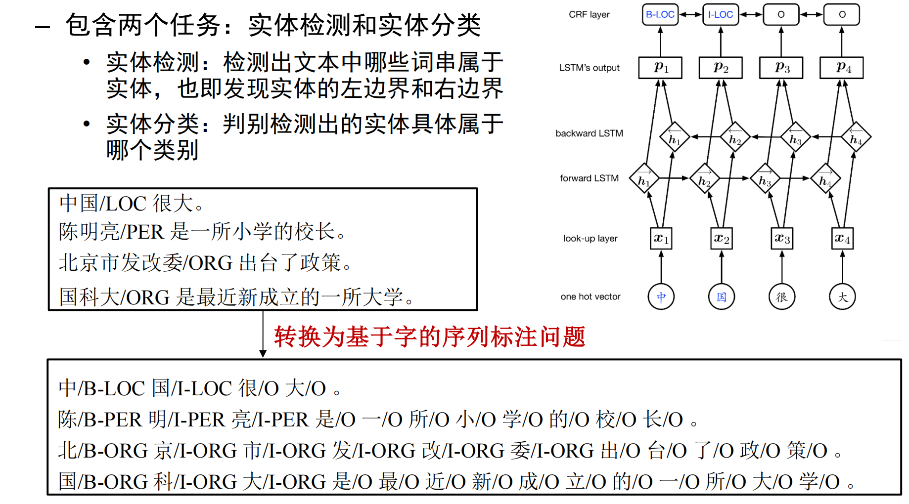
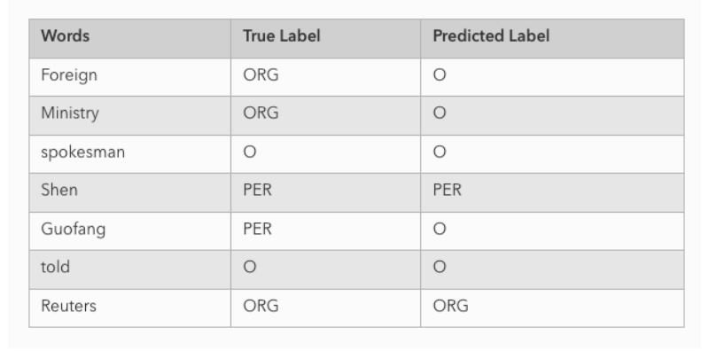
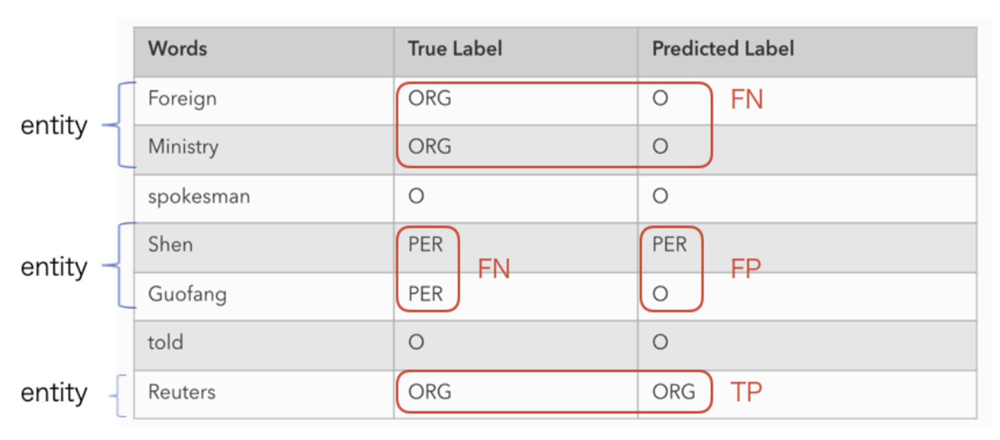

01 绪论 #
为什么需要自然语言处理？ #
语言是人类知识、思想和社会关系的主要载体，而现代社会产生了海量文本数据，人工已经无法处理，所以需要机器自动或半自动地理解、加工和利用语言信息。
- 互联网文本规模巨大，网页、评论、新闻、论坛、微博、微信、论文、专著等都包含大量文本信息。人类历史上大量知识以语言文字形式记录和传播，互联网上也有大量内容以文本形式存在，所以如果机器不能处理文本，就很难真正利用这些信息资源。
- 跨语言交流，比如机器翻译。全球有许多语言，文化、商旅、旅游、体育等场景都需要跨语言通讯和信息获取。
- 社会网络和事件关系分析。人们通过不同平台、不同语言表达观点，背后会形成复杂的人物、事件、地点、原因、结果关系，这就需要信息抽取、知识图谱、舆情分析等 NLP 技术。
- 安全与治理，例如网络犯罪、恐怖主义信息、网络内容管理等，也需要从大量文本中发现风险线索。
NLP 的基本目标可以概括成一句话：让计算机能够自动或半自动地处理自然语言文本，理解其中的内容、意图、情感、实体、关系和知识，并进一步服务于搜索、翻译、问答、推荐、客服、舆情、知识图谱等应用。
几个基本概念：语言学、计算语言学、自然语言理解、自然语言处理、HLT #
语言学 Linguistics 是研究语言本身的学科，关注语言的本质、结构和发展规律。它更偏理论，比如研究语音、词法、句法、语义、语用，研究不同语言之间的结构差异，或者语言历史演化。它不一定要求用计算机实现系统。
计算语言学 Computational Linguistics, CL 是通过建立形式化计算模型来分析、理解和生成自然语言的学科。它是语言学、计算机科学、数学等交叉产生的方向。和自然语言处理相比，计算语言学更强调基础理论和形式化模型，比如句法理论、形式文法、语义表示、语言的可计算性等。课件中特别提到，CL 和 NLP 内容相近，但 CL 更侧重基础理论和方法研究。
自然语言理解 Natural Language Understanding, NLU 更强调“理解”。它关注机器如何模仿人的语言认知过程，理解语言背后的意义、意图和上下文。比如同样一句“看看鱼怎么样了”，在厨房场景下可能意味着“鱼熟了吗”，在水族馆场景下可能意味着“鱼是否健康”，这就涉及语用、常识和上下文理解。NLU 可以看作 NLP 中更偏“理解语义和意图”的部分。
自然语言处理 Natural Language Processing, NLP 是更工程化、更宽泛的概念，研究如何利用计算机技术对语言文本进行处理和加工，包括词法、句法、语义、语用信息的识别、分类、提取、转换和生成。也就是说，NLP 既包括理解，也包括生成；既包括基础任务，也包括应用系统。课件给出的 NLP 定义强调“处理和加工”，包括识别、分类、提取、转换和生成等方法。
人类语言技术 Human Language Technology, HLT 是一个更大的说法，往往把 NLP、语音识别、语音合成、说话人识别等都放进去。因为自然语言不只有文本，也有语音。课件中后面也说明，一般把以语音信号为主要研究对象的语音技术单独列出，而把以文本为主要对象的研究内容作为 NLP 主体。
中文信息处理 Chinese Information Processing 则是针对中文的 NLP 技术。它之所以单独强调，是因为中文有自己的特点。比如中文是孤立语，形态变化少，语法关系更多依赖词序和虚词；中文书写没有天然空格，所以分词是中文处理中特别重要的基础问题。英语中单词之间有空格，“I love NLP”天然分成三个词；中文“我喜欢自然语言处理”到底切成“我/喜欢/自然语言/处理”还是“我/喜欢/自然语言处理”，就需要算法判断。

三种不同的语系：
-
屈折语 (fusional language / inflectional language):
用词的形态变化表示语法关系，如英语、法语等。
-
黏着语 (agglutinative language):
词内有专门表示语法意义的附加成分，词根或词干与附加成分的结合不紧密，如日语、韩语、土耳其语等。
-
孤立语 (isolating language):
又称分析语 (analytic language)，几乎没有形态变化，语法关系靠词序和虚词表示，如汉语、苗语、越南语等。
自然语言处理的发展历史：从规则到统计，再到深度学习 #
1950s 前后基于模板的方法，1960s 到 1980s 基于规则的方法，1990 到 2013 年左右统计 NLP 方法，2013 年以后深度学习方法。这个划分在后面每一章都会反复出现。
最早 NLP 的重要起点是机器翻译。1947 年左右，机器翻译的概念被提出；1954 年 Georgetown 大学在 IBM 协助下用 IBM-701 计算机实现了世界上第一个机器翻译演示系统，完成俄译英翻译。课件把这作为 NLP 发展史中的重要节点。机器翻译推动了后续很多技术的发展，因为翻译不仅需要词典，还需要词法分析、句法分析、语义理解、生成等完整能力。
早期的模板方法 比较简单，可以理解成预先设计一些固定格式。如果输入符合某个模板，就套用对应输出。它适合处理非常规则、非常狭窄的场景，但泛化能力弱。
1960s 到 1980s 的规则方法 是所谓理性主义路线。它相信语言可以通过人工总结的规则进行分析，比如词典、语法规则、转换规则、推理规则等。机器翻译中，可以先分析源语言句子的词法和句法结构，再用转换规则变成目标语言结构，最后查词典生成译文。课件中用 “There is a book on the desk.” 翻译成“桌子上有一本书”来说明这种流程。规则方法的优点是可解释，结构清楚，对规范语言现象效果不错；缺点是人工规则编写成本高，主观性强，不容易扩展，对新词、口语、网络语言和复杂歧义处理能力弱。
1990 到 2013 年左右是统计 NLP，也就是经验主义路线。它不再主要依赖人工规则，而是利用大规模真实语料，通过统计学习发现语言规律。比如 n-gram 语言模型、HMM、SVM、最大熵模型、CRF 等都属于这一阶段的重要方法。机器翻译中典型的是统计机器翻译 SMT，它用贝叶斯公式把翻译问题分解成语言模型和翻译模型：语言模型判断中文译文是否流畅，翻译模型判断中文译文是否忠实于英文原文。课件中的公式是：
\[ \hat C = \arg\max_C P(C)P(E|C) \]这里 E 是源语言句子，C 是目标语言译文。因为给定源句 E 后，P(E) 对所有候选译文都一样，所以可以忽略分母，只需要找让 P(C)P(E|C) 最大的译文。这个公式很重要，它体现了统计 NLP 的思想：不是写死规则，而是用概率来比较哪个候选结果更可能。
2013 年之后进入深度学习方法，也就是连结主义路线。它仍然依赖大规模数据，但不再把词、词性、短语只看成离散符号，而是把它们表示成连续向量，用神经网络学习复杂非线性关系。神经机器翻译 NMT、LSTM、Seq2Seq、Attention、Transformer、BERT、GPT 等都属于这一阶段。
NLP 的研究内容：基础技术、核心技术与应用 #
基础技术包括词法分析、句法分析、实体识别、语义分析、篇章分析、语言模型；
核心技术包括机器翻译、自动问答、情感分析、信息抽取、文本摘要、文本蕴涵；
应用包括智能客服、搜索引擎、个人助理、推荐系统、舆情分析、知识图谱等。
从建模方式把 NLP 任务分成四类：分类、序列标注、结构预测、生成。
- 分类任务是给一个整体输入分配标签，比如新闻分类、情感分类、文本匹配、文本蕴涵。它的输入可以是一句话、一篇文章或一对文本，输出通常是一个类别。
- 序列标注任务是给序列中的每个位置分配标签，比如中文分词、词性标注、命名实体识别、槽位填充。比如“南京市长江大桥”，模型可能要给每个字或词打上边界标签，判断哪些组成地点名。
- 结构预测任务输出的不只是一个标签序列，而是更复杂的结构，比如句法树、依存关系图、篇章结构。依存句法分析中，要判断“小王买电脑”里“小王”和“买”是主谓关系，“买”和“电脑”是动宾关系。
- 生成任务是根据输入生成一段文本，比如机器翻译、文本摘要、风格迁移、自动问答、对话系统。生成任务的输出空间巨大，因为每一步都要从词表里选择下一个词，所以后面语言模型和 Seq2Seq 特别重要。

为什么自然语言处理很难？ #
-
形态学问题
形态学研究词是如何由词素构成的。英语这类屈折语有丰富的词形变化，比如 study、studied、studying，speak、spoke、spoken；还有前缀后缀派生，比如 re + export 变成 reexport。汉语虽然形态变化少，但有分词问题，比如“图书馆”是“图 + 书 + 馆”组合出来的词，而不是简单的三个独立词。课件把屈折语的形态变化、单词识别以及汉语分词都放在形态学问题下。
-
句法问题
句法研究句子结构成分之间的关系和组成句子的规则。比如“我吃了苹果”和“苹果，我吃了”都可以表达相近意义，但“苹果吃了我”语义就变了。这说明词序和句法关系对意义有重要影响。课件还举了“喜欢乡下的孩子”“关于鲁迅的文章”“I saw a man with a telescope”等结构歧义例子。
-
语义问题
语义学研究一句话到底“说了什么”。语言里的词不是固定一个意思，而是在不同上下文中有不同含义。比如“这个人真牛”里的“牛”不是动物，而是厉害；“火烧圆明园”里“火烧”是动词结构，“火烧驴肉”里的“火烧”可能是食物名称的一部分。课件用这些例子说明：词义和组合意义不是简单字面相加。
-
语用学问题
语用学研究“为什么要说这句话”，也就是语言在具体场景中的含义。比如“火，火！”在看到火灾时是报警，在烧烤场景中可能是催促加火；“看看鱼怎么样了？”在做饭时可能表示“鱼熟了吗”，在养鱼时可能表示“鱼有没有问题”。这些含义不能只靠句子字面得到，而要依赖场景、说话人意图、共同知识和上下文。
-
语音学问题
研究语音特性、语音描述、分类及转写方法等。
-
大量歧义现象
存在词法歧义、词性歧义、结构歧义、语义歧义、语音歧义等。比如“南京市长江大桥”可以切成“南京市/长江/大桥”，也可以切成“南京市/长江大桥”，甚至错误地切成“南京市长/江大桥”；“门把手弄坏了”可以理解为“门/把/手/弄/坏/了”，也可以理解为“门把手/弄坏了”。
-
未知语言现象
自然语言是开放系统，会不断出现新词、新义、新用法、新句型。
-
语义组合与新概念
语义组合不是简单加法。比如“蓝 + 天”不等于简单的“蓝色 + 天”，而形成“蓝天”这个整体概念；“白云”“疾病”“图书”也有类似情况。又比如“火药”不是“火”和“药”的简单向量相加，“山药”也不是“山”和“药”的普通组合。
三种基本方法：理性主义、经验主义、连结主义 #
理性主义方法 就是基于规则的方法。它通过人工总结语言规律，建立词典、语法规则、转换规则和推理系统。形式上可以概括为：
\[ 知识库 + 推理系统 \rightarrow NLP系统 \]比如机器翻译中，先对英文句子做词法分析和句法分析，再把英文结构按规则转换成中文结构，最后查词典生成译文。它的优点是可解释、结构清楚、对规范句子效果较好；缺点是规则开发成本高、主观性强、难扩展、对未知语言现象和非规范表达适应差。
经验主义方法 就是基于统计学习的方法。它利用大规模真实语料，通过标注数据和统计模型学习语言规律。形式上可以概括为：
\[ 标注语料库 + 统计模型 \rightarrow NLP系统 \]它把词、短语、词性、标签等看成离散事件，用概率模型或机器学习模型预测结果。n-gram、HMM、SVM、最大熵、CRF 都属于这个范式。它的优势是比人工规则更容易扩展，能够从数据中学习规律；不足是依赖特征工程、数据质量和标注规模，离散表示也难以表达复杂语义相似性。
连结主义方法 就是深度学习方法。它也使用大规模真实语料，但它把词和句子表示成连续向量，并用神经网络自动学习特征。形式上可以概括为：
\[ 语料库 + 神经网络 + 统计模型 \rightarrow NLP系统 \]它的特点是分布式表示、非线性建模、端到端训练。词向量、CNN、RNN、LSTM、Seq2Seq、Attention、Transformer、BERT、GPT 都属于这条路线。优势是特征学习能力强，能处理复杂模式；不足是需要大量数据和算力，解释性较弱，对事实一致性、长文本推理、低资源语言等仍有困难。
02 基于规则的自然语言处理 #
规则方法到底是什么？ #
规则方法的核心思想是：把人类对语言的理解显式写成规则，然后让程序按照这些规则处理输入文本。这里的“规则”可以是词典规则、词形变化规则、分词规则、词性消歧规则、命名实体模板、机器翻译转换规则等。课件把它概括为：以规则形式表示语言知识，基于规则进行知识表示和推理，强调人对语言知识的理性整理，也就是“知识工程”。

你可以把规则方法理解成一个专家系统。比如输入一句自然语言 x，系统内部有一套规则库，程序像一个规则解释器一样检查输入满足哪些条件，然后输出结果 y。如果我们要做中文分词，规则库可能包含词典、最大匹配规则、歧义消解规则；如果要做命名实体识别，规则库可能包含人名词表、地名词表、机构后缀词、“某某教授”“某某公司”等模式；如果要做机器翻译，规则库可能包含双语词典、词序转换规则、句法树转换规则。
规则方法不是没有“算法”，只是它的知识来源主要不是训练数据，而是人工写出来的语言知识。
为什么今天还要学规则方法？ #
第一，规则方法是 NLP 发展史的重要阶段。
第二，规则方法在数据少的时候仍然有用。 比如某个医疗领域、金融领域、法律领域的小任务，未必有足够标注数据训练模型，但专家可以总结出很多明确规则。例如病历里的“血压 120/80mmHg”、合同里的金额、日期、邮箱、身份证号等，规则和正则表达式往往非常有效。
第三，规则方法是理解很多 NLP 任务的“原始形态”。 分词、词性标注、命名实体识别、机器翻译这些任务，后面会有统计方法、神经网络方法，但它们最早都可以用规则做。
形态还原：把变化后的词还原成原形 #
形态还原的目标是：把句子中出现的词还原成原形，方便查词典和后续处理。比如 studied、studying 要还原成 study，went、gone 要还原成 go。课件中把英语构词变化分成曲折变化、派生变化和复合变化。曲折变化指词尾或词形变化，但词性一般不变，比如 study / studied / studying；派生变化指加前缀或后缀，词性可能变化，比如 friend / friendly / friendship；复合变化则是多个词组合成一个词。
规则方法做形态还原时，通常需要两类规则：通用规则 和个性规则。


形态还原的基本流程可以这样理解：系统读入一个单词，先看原型词典里有没有这个词。如果有，直接输出该词及其属性；如果没有，就尝试应用还原规则，看看还原后的词是否在词典里；如果还原后也找不到，就交给未登录词模块处理。这个过程本质上就是“词典查询 + 规则改写 + 合法性检查”。
中文分词：把字串切成词串 #
中文分词的定义是：根据某个分词规范，把一个“字”串划分成“词”串。课件强调，词是语言中最小的能独立运用的单位，也是语言信息处理的基本单位。
为什么中文需要分词？因为中文不像英文那样天然用空格分隔单词。英文 “I love NLP” 很容易拆成 I / love / NLP；但中文“南京市长江大桥”就不明显，它既可能是“南京市 / 长江大桥”，也可能被错误地理解成“南京市长 / 江大桥”。所以，在很多中文 NLP 系统里，分词是词性标注、命名实体识别、信息检索、文本分类、机器翻译的前置步骤。
共有三类切分歧义：
交集型歧义 指 ABC 可以切成 AB/C，也可以切成 A/BC。也就是说，两种切分有交叉部分。课件例子是“和平等”。在“独立自主和平等独立的原则”里，可能切成“和 / 平等”；而在“讨论战争与和平等问题”里，则可能切成“和平 / 等”。同一个字串“和平等”，在不同上下文中切法不同。
组合型歧义 指 AB 可以切成一个词 AB，也可以切成两个词 A/B。课件例子是“马上”。在“他骑在马上”中，应该切成“马 / 上”；而在“马上过来”中，应该切成“马上”。这就是一个字串本身既可以作为整体词，也可以拆成多个词。
混合型歧义 是交集型和组合型嵌套或交叉。课件例子是“得到达”，可以出现在“我今晚得/到达南京”“我/得到/达克宁了”“我/得/到/达克宁公司去”等不同句子中。这里既有“得/到达”与“得到/达克宁”的交叉，也有“得到”能否作为一个词的组合问题。
课件还区分了伪歧义 和真歧义。伪歧义是看起来有多种切法，但实际上在任何情况下只有一种合理切分，比如“为人民”通常就是“为 / 人民 / 服务”中的“为 / 人民”。真歧义则必须依赖上下文才能判断，比如“从小学”。在“从小/学电脑”中，“从小”是一个词；在“他从/小学毕业后”中，“小学”是一个词。
基于规则的分词方法 #
正向最大匹配 FMM 是从左到右扫描句子，每次尽可能取词典中最长的词。比如句子是“南京大学生物系”，假设词典里有“南京大学”“生物系”“大学生”等词，FMM 会从开头开始找最长匹配，可能先取“南京大学”，再取“生物系”。
逆向最大匹配 RMM 则从右到左扫描，每次也取最长词。它和 FMM 的区别只是方向不同。某些歧义场景下，FMM 和 RMM 会得到不同结果，这时就说明句子中存在切分歧义。
双向最大匹配 就是同时做 FMM 和 RMM。如果两者结果一致，就认为切分比较可靠；如果不一致，就用额外消歧规则。课件指出，双向最大匹配可以发现交集型歧义，例如“幼儿园/地/节目”和“幼儿/园地/节目”。
正向最大、逆向最小匹配，它可以发现组合型歧义。例如“他/骑/在/马上”和“他/骑/在/马/上”的差异。
逐词遍历匹配，在全句中取最长的词，去掉之，对剩下字符串重复该过程
设立切分标记，收集词首字和词尾字，先把句子分成较小单位，再用某些方法切分
全切分，把所有可能的切分列出来，选择最可能的切分
规则分词并不是只靠“最长匹配”就万事大吉。最长匹配有时会错。例如“研究生命起源”，如果词典中有“研究生”，最长匹配可能把它切成“研究生 / 命 / 起源”，但正确切分应该是“研究 / 生命 / 起源”。这说明分词需要上下文、句法、语义甚至常识信息。
可以利用歧义字串、前驱字串、后继字串的句法、语义和语用信息。例如“阵风”这个词，要看前面是否有数词：“一/阵/风/吹过来”和“今天/有/阵风”切法不同（句法）；“了解”也要看后面的搭配，“解数学难题”里的“解”不应该和前面的“了”合成“了解”（语义）；“乒乓球拍卖完了”则需要语用场景判断是“球拍卖完了”还是“拍卖”（语用）
分词带来的问题：
- 组成词的字的信息丢失
- 错误的分词影响后续的工作
- 不同分词规范的分词造成分词结果不一致
词性标注 POS Tagging #
为句子中的词标上预定义类别集合中的类，也就是词性。目标是为后续句法分析和语义分析提供必要信息。比如“欢迎 各位 修读 NLP 课程”，可以标成“欢迎/动词，各位/名词，修读/动词，NLP/名词，课程/名词”。
词性标注首先需要一个词性标注体系。词的分类可以按形态和句法功能，也可以按表达意义，或者兼顾两者。英语中通常分为开放类和封闭类。开放类 包括名词、动词、形容词、副词，这些类别中的词数量可以不断增加；封闭类 包括限定词、代词、介词、连词、助动词、数词等，这些类别比较稳定，数量有限。


词性标注的难点在于 兼类词，也就是一个词有两个或多个词性。课件举了英文 back 的例子：The back door 里的 back 是形容词或名词修饰成分，On my back 里的 back 是名词，Promise to back the bill 里的 back 是动词。汉语由于缺少词形变化，兼类词更多，比如“把门锁上”和“买了一把锁”里的“把”不同，“他研究 xx”和“他的研究工作”里的“研究”可以是动词也可以是名词。
基于规则的词性标注通常分两步：先由词典和规则提供候选词性，再由消歧规则选择最终词性。比如一个词在词典里可能有名词和动词两种词性，系统就根据它前后的词、句法位置、搭配模式来判断。课件还提到了统计方法和基于转换的错误驱动方法。统计方法是选择最可能的词性结果，需要已标注训练语料；基于转换的错误驱动方法则会从标注语料中自动学习规则，再用规则进行标注。课件中举了 RDRPOSTagger，它用二叉树形式自动构建标注规则。
命名实体识别：找到实体边界并判断类型 NER #
识别出一句话中的所有命名实体，包括找到实体边界和确定实体类型。 比如“小明在南京大学的方肇周体育馆看了一场比赛”，其中“小明”是人名，“南京大学”是机构名，“方肇周体育馆”是地名或地点。NER 的目的，是为后续语义分析、信息抽取、知识图谱等任务提供支持。
命名实体分类体系可以不同。
三大类：实体类、时间类、数字类；
七大类：人名、地名、机构名、时间、日期、货币量、百分数。
还可以根据任务需要设计其他体系，比如医学领域会有疾病名、药物名、症状名、检查项目名；金融领域会有公司名、股票代码、金额、指标名等。
基于规则的 NER 核心思想是 匹配，主要依赖词典、模板和正则表达式。比如人名识别可以利用身份词、指界词、标点符号等线索。

基于实体词表的匹配很直接：专家整理一个实体词表，系统遇到词表中的词就识别为实体。这种方法速度快，适合医疗、金融、法律等垂直领域，因为这些领域术语相对固定。但缺点是覆盖率有限，需要人工维护，遇到新实体会漏掉。
对于格式比较规律的实体，可以用规则模板或正则表达式。比如邮箱一般是 xxxx@xxx.com 这种形式，可以用正则表达式匹配；日期可以用类似 \d{4}[年-]\d{1,2}[月-]\d{1,2}日 的模板提取。课件专门用 Email 和日期作为例子说明，规则模板可以作为实体词表的补充。
基于规则的机器翻译 #
将源语言句子 x 翻译成目标语言句子 y 的任务。形式上可以写成：
\[ \arg\max_y P(y|x) \]规则翻译通常分三步：分析、转换、生成。分析阶段，把源语言句子解析成某种深层结构表示，可能包括词法、句法、语义分析；转换阶段，把源语言结构转换成目标语言结构；生成阶段，根据目标语言结构生成目标语言句子。

基于词的转换翻译 最简单。它主要做词法分析、择词选择、词序调整和形态生成。比如“他 在 北京 工作”逐词翻译可能得到 “He in Beijing works”。这说明只做词汇转换是不够的，因为英文正确语序应该是 “He works in Beijing”。所以还需要调序规则和形态生成规则。

基于句法结构转换的翻译 更进一步。它先分析源语言句法树，然后用“树到树”的转换规则把源语言句法树变成目标语言句法树，再生成目标语言句子。课件中的例子是“他 在 北京 工作”。源语言中“在北京”是介词短语 PP，“工作”是 VP，中文结构可能是 PP 在 VP 前面；英文中则要转换成 “works in Beijing”，也就是 VP 后面跟 PP。这里转换的不是孤立词，而是句法结构。

基于语义转换的翻译 再往上走。它希望用更语言独立的语义表示，减少不同语言句法结构差异的影响。课件举了英文和西班牙语的例子：英语 “Susan swam across the channel” 和西班牙语表达可能更像 “Susan crossed the channel swimming”。这里英语把“游泳”作为运动方式，把“穿过海峡”作为路径；而西班牙语可能用“穿过”作主谓动作，“游泳”作为方式补充。还有 “You like her” 到西班牙语 “Ella te gusta”，宾语 her 可能变成主语 Ella。这说明不同语言之间不仅词序不同，语义角色的表达方式也可能不同。
基于中间语言的翻译 是最理想化的一种。它先把源语言分析成一个独立于任何具体语言的概念表示，也就是 Interlingua，然后再从这个中间表示生成目标语言。它的好处在多语翻译中特别明显：如果有 n 种语言，普通转换翻译需要 n(n-1) 个方向模块，而中间语言翻译只需要每种语言到中间语、从中间语到每种语言，总共 2n 个模块。

但是中间语言方法也有很大问题。它需要一个统一的概念集和概念关系集，也就是类似 ontology 的东西，而且要适用于多种语言。问题是：这样的通用 ontology 是否真的存在？即使存在，把任意自然语言句子准确分析成这种中间语也非常困难，需要大量消歧。
03 文本分类 #
文本分类是什么 #
将给定的文本文档或句子分类到预定义类别中。
比如新闻分类，把一篇新闻分到体育、财经、科技、娱乐；情感分类，把一条评论分成正面、中立、负面；问题分类，把一个问题分成“人物、地点、时间、数量、原因”等类别。
注意两个概念：单标签多类别分类 和多标签多类别分类。单标签多类别分类是指每个样本只属于一个类别，比如一篇新闻只能被分到“体育”或“娱乐”或“财经”中的一个。多标签多类别分类是指一个样本可以同时属于多个类别，比如一篇文章既可以是“科技”，又可以是“财经”，还可能涉及“政策”。
从机器学习角度看，文本分类就是一个监督学习问题。训练集里有很多已经标注好类别的文本，例如：
\[ (d_1, y_1), (d_2, y_2), \dots, (d_N, y_N) \]\[ 文本 \rightarrow 特征表示 \rightarrow 特征选择 \rightarrow 分类器 \rightarrow 类别 \]
文本表示：为什么要把文本变成向量？ #
文本是由文字和标点组成的字符串，短语、句子、段落、篇章都是不同粒度的文本；而文本的形式化表示，是反映文本内容和区分不同文本的有效途径。

使用向量空间模型 Vector Space Model, VSM
向量空间模型的核心思想是：把文本看成特征项的集合，每个特征项对应向量的一个维度，每个维度上的数值表示该特征在文本中的权重。特征项可以是字、词、短语，也可以是 bigram、trigram 等。
如果把词语作为特征项，那么整个特征项集合就是一个词表，文本表示就变成词袋模型 Bag-of-Words。
比如我们有一个很小的词表：
\[ V = [the, cat, sat, in, hat, with] \]文本 “the cat sat” 可以表示为：
\[ [1, 1, 1, 0, 0, 0] \]文本 “the cat sat in the hat” 可以表示为：
\[ [2, 1, 1, 1, 1, 0] \]词袋模型只关心词是否出现、出现多少次，不关心词序。所以 “dog bites man” 和 “man bites dog” 如果词集合完全一样，在词袋模型中可能非常相似，但它们意思完全不同。这是传统词袋表示的局限。
特征项和权重：Boolean、TF、IDF、TF-IDF #
每个特征项的权重怎么计算？
最简单的是 布尔权重，也就是只看某个词是否出现：
\[ w_i =\begin{cases}1, & \text{如果 } t_i \text{ 在文本 } d \text{ 中出现}\\0, & \text{否则}\end{cases} \]这种表示忽略出现次数。比如 “good” 出现一次和出现十次都记为 1。它简单，但信息利用不充分。
第二种是 词频 Term Frequency, TF，考虑一个词在当前文档中出现的次数。课件给出的形式是：
\[ w_i = \log(tf_i + 1) \]这里 \(tf_i\) 是词 \(t_i\) 在当前文本中的出现次数。为什么要取 log？因为出现次数越多，确实说明这个词可能越重要，但重要性不是线性增长的。一个词出现 10 次并不一定比出现 1 次重要 10 倍，所以用 log 压缩增长幅度。
第三种是 逆文档频率 Inverse Document Frequency, IDF：
\[ idf_i = \log \frac{N}{df_i} \]这里 N 是文档总数，\(df_i\) 是包含词 \(t_i\) 的文档数。IDF 的思想是：如果一个词在很多文档里都出现，它区分类别的能力就弱；如果一个词只在少数文档里出现，它可能更有区分度。比如“的”“是”“我们”这种词到处都出现，IDF 低；“排球”“计算机”“奥林匹克”这种词更能说明主题，IDF 高。
最后是 TF-IDF：
\[ tfidf_i = tf_i \cdot idf_i \]TF-IDF 可以理解成同时考虑两个因素：这个词在当前文档中是否重要，以及这个词在整个语料中是否有区分性。一个词在当前文档中出现多，而且不是所有文档都出现，那么它的 TF-IDF 权重就高。
特征选择：为什么不把所有词都用上？ #
文本分类的特征空间通常非常大。一个语料库可能有几万甚至几十万个词，如果每个词都作为一个维度，就会导致向量维度极高、计算成本大、噪声多、模型容易过拟合。因此需要 特征选择：从原始词表中选出更有分类价值的词。
-
文档频率 DF
一个特征在多少篇文档中出现过。如果一个词的 DF 很低，说明它只在极少数文档中出现，可能是错别字、噪声、罕见词，对分类帮助有限。课件给出的基本假设是：DF 值低于某个阈值的词条往往不含或含有较少类别信息，把这些词从原始特征空间中去掉，可以降低维度，甚至提高分类精度。
DF 方法本身比较粗糙。它只看“出现文档数”，不直接看这个词是否偏向某个类别。比如“的”在所有类别中都频繁出现，DF 很高，但分类意义很弱。所以 DF 常用于初步过滤低频噪声，而更精细的特征选择需要 MI 或 IG。
对于特征 \(t_i\) 和类别 \(c_j\)，有四个统计量：
其中 \(A_{ij}\) 表示类别 \(c_j\) 的文档中出现特征 \(t_i\) 的文档数；\(B_{ij}\) 表示非 \(c_j\) 类文档中出现 \(t_i\) 的文档数；\(C_{ij}\) 表示 \(c_j\) 类文档中没有出现 \(t_i\) 的文档数；\(D_{ij}\) 表示非 \(c_j\) 类文档中没有出现 \(t_i\) 的文档数。
-
互信息 MI
互信息 Mutual Information 衡量两个随机变量之间的依赖程度。放在文本分类里，就是衡量一个特征词 \(t_i\) 和一个类别 \(c_j\) 之间关联有多强。

对于具体特征 \(t_i\) 和类别 \(c_j\)，课件给出的点式互信息是：
-
信息增益 IG：一个词能让分类不确定性降低多少？
知道某个特征是否出现之后，类别的不确定性减少了多少。
信息增益和互信息的关系：
**MI 看“词和某个类别是否强相关”；IG 看“这个词能让整个分类问题的不确定性减少多少”。**
**MI 容易偏爱罕见但和某类偶然共现的词；IG 更重视这个词对整体分类不确定性的实际贡献。**
分类算法：从文本向量到类别预测 #
- 生成式模型：朴素贝叶斯
放到文本分类里，就是：
\(P(c_j)\) 是先验概率，表示在不知道文本内容之前，类别 \(c_j\) 本身有多常见；\(P(\mathbf{x}|c_j)\) 是似然，表示如果文本属于类别 \(c_j\)，它生成当前这些词的概率有多大。模型会选择“类别本身常见，并且很能解释当前文本”的类别。
这个联合概率很难估计，因为词之间有复杂依赖。朴素贝叶斯做了一个非常强的假设：**在给定类别的条件下，各个词之间条件独立**。因此：
如果采用多项式分布文本模型，也可以写成：
其中 M 是词表大小，\(N(w_i)\) 是词 \(w_i\) 在当前文本中出现的次数。于是分类规则变成：
朴素贝叶斯需要估计两个参数：类别先验 \(P(c_j)\) 和类别条件词概率 \(P(w_i|c_j)\)。
不平滑时，最大似然估计是：
其中 \(N(c_j)\) 是类别 \(c_j\) 的文档数，\(N_{all}\) 是总文档数，\(N(w_i,c_j)\) 是词 \(w_i\) 在类别 \(c_j\) 文档中出现的次数。
引入拉普拉斯平滑：
这里 C 是类别数，M 是词表大小。加 1 平滑的直观理解是：假设每个类别、每个词都至少出现过一次，从而避免概率为 0。
- 判别式模型-线性模型
这里 \(\mathbf{x}\) 是文本特征向量，\(\mathbf{w}\) 是权重向量，\(w_0\) 是偏置项。它对应一个线性决策面。二分类时，如果 \(g(\mathbf{x})\gt 0\)，分为正类；如果 \(g(\mathbf{x})\lt 0\)，分为负类。
线性判别函数可以用不同学习准则训练，比如感知器准则、最小均方差 LMS、交叉熵 CE、最小分类错误率 MCE 等。
文本分类性能评估：TP、FP、FN、TN #
真正例 TP：模型预测属于该类，真实也属于该类。
真负例 TN：模型预测不属于该类，真实也不属于该类。
假正例 FP：模型预测属于该类，但真实不属于该类。
假负例 FN：模型预测不属于该类，但真实属于该类。
\[ R_i=\frac{TP_i}{TP_i+FN_i} \]\[ P_i=\frac{TP_i}{TP_i+FP_i} \]\[ F1=\frac{2PR}{P+R} \]Accuracy、Macro 和 Micro #
\[ Acc=\frac{\#Correct}{N} \]但在多类别分类中，只看 Accuracy 不够。因为类别可能不均衡。比如 1000 篇文本中有 950 篇是体育，50 篇是教育，模型全部预测体育，也能有 95% Accuracy，但对教育类完全没用。
因此需要 Macro 和 Micro。
宏平均 Macro 是先对每个类别分别计算 Precision、Recall，然后对类别取平均：
\[ Macro\_P=\frac{1}{C}\sum_{j=1}^{C}\frac{TP_j}{TP_j+FP_j} \]\[ Macro\_R=\frac{1}{C}\sum_{j=1}^{C}\frac{TP_j}{TP_j+FN_j} \]\[ Macro\_F1=\frac{2\times Macro\_P\times Macro\_R}{Macro\_P+Macro\_R} \]Macro 的特点是：每个类别权重相同。所以它更关注小类别的表现。即使某个类别样本很少，只要这个类别效果差，Macro 指标也会被明显拉低。
微平均 Micro 是先把所有类别的 TP、FP、FN 加起来，再统一计算：
\[ Micro\_P=\frac{\sum_{j=1}^{C}TP_j}{\sum_{j=1}^{C}(TP_j+FP_j)} \]\[ Micro\_R=\frac{\sum_{j=1}^{C}TP_j}{\sum_{j=1}^{C}(TP_j+FN_j)} \]\[ Micro\_F1=\frac{2\times Micro\_P\times Micro\_R}{Micro\_P+Micro\_R} \]Micro 的特点是：每个样本权重相同。所以大类别会对 Micro 影响更大。
P-R 曲线、ROC 曲线和 AUC #
P-R 曲线 的横轴是 Recall，纵轴是 Precision。分类器通常会给每个样本一个正类得分，阈值越低，越多样本被判为正类，Recall 通常越高，但 Precision 可能下降；阈值越高，模型更保守，Precision 可能更高，但 Recall 下降。通过改变阈值，就可以得到一系列 Precision-Recall 点，连起来就是 P-R 曲线。
P-R 曲线特别适合类别不均衡的情况。比如正例很少时，Accuracy 和 ROC 有时会显得过于乐观，而 Precision 和 Recall 能更直接反映模型对少数正类的识别质量。

ROC 曲线 的横轴是假正率 FPR，纵轴是真正率 TPR，也就是 Recall。
左上角意味着 TPR 高、FPR 低，也就是尽可能找出正例，同时少误伤负例。ROC 曲线下面积叫 AUC，AUC 越大，说明分类器整体排序能力越好。

04 语言模型 #
语言模型到底在解决什么问题？ #
语言模型最基本的问题是：如何计算一段文字或者一句话的概率？ 也就是说，给定一个句子：
\[ s = w_1 w_2 \cdots w_m \]我们希望计算：
\[ p(s) \]这个概率可以理解成“这句话在自然语言中出现的合理程度”。比如“他是研究生物的”比“他实验救生物的”更自然，所以前者应该有更高的语言模型概率。
\[ p(s)=p(w_1)p(w_2|w_1)p(w_3|w_1w_2)\cdots p(w_m|w_1\cdots w_{m-1}) \]\[ p(s)=\prod_{i=1}^{m}p(w_i|w_1\cdots w_{i-1}) \]为什么不能直接用完整历史？ #
链式法则虽然正确，但直接使用完整历史几乎不可行。原因是历史组合太多，参数数量会爆炸。假设词表大小是 L，当我们预测第 i 个词时，它前面有 i-1 个历史位置，每个位置理论上都可能是词表中的任意词，那么历史组合数量大约是：
\[ L^{i-1} \]这就是语言模型的第一个核心困难：上下文越长，理论上表达能力越强，但参数数量和数据需求会指数级增长。
所以我们需要减少历史基元个数，把完整历史 \(w_1,\dots,w_{i-1}\) 映射到一个等价类 \(S(w_1,\dots,w_{i-1})\)，使得等价类数量远远小于完整历史数量。n-gram 的做法就是：只保留最近的 n-1 个词作为历史。
\[ p(w_i|w_1\cdots w_{i-1})\approx p(w_i|w_{i-n+1}\cdots w_{i-1}) \]n-gram 模型：用有限窗口近似完整历史 #
n-gram 模型的思想是：预测当前词 \(w_i\) 时，只看它前面的 n-1 个词。课件中说，通常 \(n=1\sim5\)。
当 n=1 时，就是 unigram：
\[ p(s)=\prod_i p(w_i) \]它完全不看上下文。每个词独立出现。比如“我 喜欢 吃 苹果”和“苹果 吃 喜欢 我”在 unigram 下可能概率相近，因为它只看词本身出现频率。
当 n=2 时，就是 bigram：
\[ p(s)=\prod_i p(w_i|w_{i-1}) \]也就是当前词只依赖前一个词。
当 n=3 时，就是 trigram：
\[ p(s)=\prod_i p(w_i|w_{i-2},w_{i-1}) \]也就是当前词依赖前两个词。把 bigram 称为一阶马尔可夫链，trigram 称为二阶马尔可夫链。
为了处理句子开头和结尾，通常会加上 <BOS> 和 <EOS>。比如句子：
可以写成：
\[ \lt BOS\gt \ w_1w_2\cdots w_m\ \lt EOS\gt \]这样模型不仅能计算句子内部词的概率，也能计算“某个词作为句首词的概率”和“某句话结束在这里的概率”。
n-gram 的优点是简单、直观、可统计；缺点也很明显：它只能利用有限窗口内的上下文，无法捕捉长距离依赖，而且会遇到严重的数据稀疏问题。
如果汉字的总数为 N，使用一元文法时搜索空间为 N，只选择使用频率最高的汉字；使用 2 元文法时搜索空间为 \(N^2\)，效果比一元文法明显提高；对于汉字而言，4 元文法效果会好一些。智能狂拼、微软拼音输入法都是基于 n-gram 实现的。
n-gram 的参数估计：最大似然估计 #
\[ p(w_i|w_{i-n+1}^{i-1})=\frac{c(w_{i-n+1}^{i})}{\sum_{w_i}c(w_{i-n+1}^{i})} \]\[ p(w_i|h)=\frac{c(h,w_i)}{c(h)} \]其中 h 是历史，也就是前 n-1 个词；\(c(h,w_i)\) 表示历史 h 后面接 \(w_i\) 的次数；c(h) 表示历史 h 出现的总次数。

最大似然估计有一个严重问题：只要某个 n-gram 在训练集中没有出现，它的概率就是 0。 于是整个句子的概率也会变成 0。
需要 数据平滑 smoothing：调整最大似然估计的概率值，使零概率增值，使非零概率下调，也就是“劫富济贫”，消除零概率，改进模型整体正确率。
训练集中出现过的 n-gram 原本占了全部概率质量，现在要从它们那里拿出一点概率，分给没见过的 n-gram。这样概率仍然满足归一化约束：
\[ \sum_{w_i}p(w_i|w_{i-n+1}^{i-1})=1 \]但不会再有大量 0 概率。
困惑度：语言模型怎么评价？ #
语言模型的评价指标通常是 困惑度 Perplexity。
对测试集 T，如果它有 \(w_T\) 个词，测试集概率为 p(T)，则困惑度是：
\[ PPP(T)=2^{-\frac{1}{w_T}\log_2 p(T)} \]\[ PP(T)=p(T)^{-\frac{1}{w_T}} \]困惑度越小，语言模型越好。为什么？因为如果模型给真实测试语料很高的概率，那么 p(T) 大，负对数小，困惑度就小。反过来，如果模型觉得真实测试语料很不可能，p(T) 很小，困惑度就大。
语言模型如何评价：通常用测试集上的困惑度，困惑度越低说明模型对测试语料赋予的概率越高，模型越好。
加 1 平滑：最简单的平滑方法 #
对于 bigram：
\[ p(w_i|w_{i-1})=\frac{1+c(w_{i-1}w_i)}{|V|+\sum_{w_i}c(w_{i-1}w_i)}=\frac{1+c(w_{i-1}w_i)}{|V|+c(w_{i-1})} \]其中 |V| 是词汇表大小。分母中加 |V|，是因为对每个可能的后继词都加了 1，一共加了 |V| 次。

分母变化是因为条件词 \(w_{i-1}\) 在语料中出现次数不同。
为什么需要神经语言模型？ #
第一个问题是 数据稀疏。比如 “很 乏味” 这个 bigram 可能没在训练集中出现过，那么传统 n-gram 就无法给它合理概率，或者需要平滑勉强处理。
第二个问题是 忽略语义相似性。比如“枯燥”和“乏味”语义相似，但在 n-gram 中它们是两个完全不同的离散符号。即使模型见过很多次“很枯燥”，它也不能自然地把这些统计信息迁移到“很乏味”上。因为在 one-hot 表示中，任意两个不同词的相似度都是 0。
这就是神经语言模型出现的动机：用低维、稠密、连续的词向量表示词，使语义相似的词在向量空间中靠近，从而共享统计信息。
比如“枯燥”和“乏味”的词向量可能很相近，“风趣”和“幽默”的词向量也很相近。这样，即使模型没有见过“很乏味”，但见过“很枯燥”，也可以利用相似词之间的表示相近性做出更合理预测。
这一步非常关键：从传统语言模型到神经语言模型，不只是模型换成了神经网络，更重要的是 词从离散符号变成了连续向量。

神经元、激活函数和前馈神经网络 #
一个神经元接收输入：
\[ x_1,\dots,x_n \]对应权重：
\[ w_1,\dots,w_n \]
加上偏置 b，经过激活函数 f，输出：
\[ y=f(\mathbf{w}^T\mathbf{x}+b) \]常见激活函数包括 sigmoid、tanh 和 ReLU。
Sigmoid 是：
\[ \sigma(x)=\frac{1}{1+\exp(-x)} \]它把实数压缩到 (0,1)，可以理解成输出一个接近概率的值。

tanh 是：
\[ \tanh(x)=\frac{\exp(x)-\exp(-x)}{\exp(x)+\exp(-x)} \]它的值域是 (-1,1)，也可以写成：
\[ \tanh(x)=2\sigma(2x)-1 \]看作是放大并平移的Logistic 函数

ReLU 是：
\[ ReLU(x)=\max(0,x) \]它简单高效，小于 0 的输入输出 0，大于 0 的输入原样输出。

详情见：
前馈神经网络语言模型：用固定窗口预测下一个词 #
前馈神经网络语言模型可以看成神经版 n-gram。它仍然只看前面固定窗口内的 n−1 个词，但这些词不再用 one-hot 直接统计，而是先查表得到词向量。


具体流程是这样的。假设我们要预测：
这 本 书 很 __模型要计算：
\[ p(\_\ |\text{这, 本, 书, 很}) \]第一步，查词向量表 LT。每个词对应一个低维向量，比如课件举例中：
\[ 这=(0.2,0.1) \]\[ 本=(0.1,0.3) \]\[ 书=(0.4,0.2) \]\[ 很=(0.5,0.4) \]第二步，把这些条件词的向量拼接起来：
\[ x=(0.2,0.1,0.1,0.3,0.4,0.2,0.5,0.4)^T \]第三步，送入隐藏层，做线性映射加非线性变换：
\[ h=\tanh(W^1x+b) \]第四步，输出层对词表中每个候选词打分，再通过 Softmax 转成概率分布：
\[ p(y=c|x)=\frac{\exp(w_c^Tx)}{\sum_{c'=1}^{C}\exp(w_{c'}^Tx)} \]

h 可以理解为模型根据前文得到的“上下文语义表示”，与 \(L_T^T\) 相乘得到每个词作为下一个词的打分
词向量表 LT：它把 one-hot 的词编号映射到低维向量。V 是词表大小，D 是词向量维度，D 通常是人工设定的超参数，一般几十到几百。词向量通常随机初始化，然后通过最大化语言模型似然进行学习。
神经网络参数 W,b：它们负责把上下文词向量映射成下一个词的概率分布。
所以前馈神经网络语言模型的训练目标就是：让真实下一个词的概率尽可能大。比如输入“这 本 书 很”，真实下一个词是“乏味”，模型就要调节 \(LT,W,b\)，让 \(p(\text{乏味}|\text{这, 本, 书, 很})\) 变大。
但前馈神经网络语言模型也存在局限：它只对小窗口历史信息建模。
循环神经网络语言模型：用隐藏状态积累历史 #
循环神经网络 RNN 的关键思想是：用一个隐藏状态 \(h_t\) 来保存从句子开头到当前位置的历史信息。与前馈网络不同，RNN 每一步的输出不仅取决于当前输入词，也取决于上一时刻的隐藏状态。
\[ h_t=\tanh(U\cdot w_t + W\cdot h_{t-1}) \]其中 \(w_t\) 是当前位置词的词向量，\(h_{t-1}\) 是到上一个时刻为止的历史，\(h_t\) 是到当前位置为止的历史积累。
和前馈语言模型相比，RNN 的优势是它不需要固定窗口，理论上可以利用所有历史。但它也有自己的问题。


RNN 会遇到 梯度消失或爆炸。
原因是参数 W 在时间维度上反复传递很多次。反向传播时，梯度也要沿着时间一步步传回去。如果每次乘上的矩阵效果小于 1，乘很多次后梯度会越来越小，最后接近 0，这就是梯度消失；如果每次效果大于 1，乘很多次后梯度会越来越大，这就是梯度爆炸。
梯度消失会导致模型很难学习长距离依赖。比如在一句很长的话中，前面某个主语可能决定后面谓语形式，但普通 RNN 很难把这个信息稳定传到很远的位置。
详情见：
05 文本表示 #
文本原本是符号，机器学习模型需要数值向量，中间必须有一个表示过程。
向量空间模型回顾：文本作为特征项集合 #
核心思想是把文本看成特征项集合。特征项可以是字、词、短语等，文本可以表示成：
\[ (t_1,t_2,\dots,t_n) \]进一步，每个特征项有一个权重，于是文本可以表示成：
\[ (t_1:w_1,t_2:w_2,\dots,t_n:w_n) \]或者直接写成向量：
\[ (w_1,w_2,\dots,w_n) \]这个模型的优点是简单清楚，适合信息检索和传统文本分类。比如一篇体育新闻里“排球”“运动会”“夺冠”这些词权重高，那么分类器就容易判断它属于体育类。但它的根本问题是：每个维度都是一个离散特征，词与词之间没有内在联系。
在这种表示里，任意两个不同词之间的相似度都是 0。而自然语言中，大量泛化能力都来自“相似词可以共享信息”。
此外，one-hot 还有两个实际问题。
第一，维度很高。如果词表有 5 万个词，每个词就是 5 万维向量，但其中只有一个位置是 1，极其稀疏。
第二，无法表达语义结构。比如“北京”和“南京”都是城市，“苹果”和“香蕉”都是食物，这些关系在 one-hot 中完全不存在。
所以我们需要 分布式表示 distributed representation：用低维、稠密、连续的实数向量表示词。
表示学习的两大路线 #
第一类是文本概念表示模型，以 LSA、PLSA、LDA 等主题模型为代表。它们的目标是挖掘文本中的隐含主题或概念，把文本表示成主题分布向量。比如一篇文章可能是：
\[ 0.6 \times \text{科技} + 0.3 \times \text{教育} + 0.1 \times \text{体育} \]这种方法更偏传统统计建模，关注文档层面的隐含主题。
第二类是深度表示学习模型，也就是我们这章主要讲的词向量、短语向量、句子向量、文档向量。它通过优化某种目标函数，比如语言模型似然、上下文预测目标、重构误差、语义约束等，自动学习文本单元的低维实数向量表示。
词语的表示学习：Look-up Table 和词向量矩阵 #
词向量的基本形式是一个查表矩阵，也叫 look-up table。课件设词表大小为 V，词向量维度为 D，那么词向量矩阵是：
\[ L\in \mathbb{R}^{D\times V} \]词表中每个词对应矩阵 L 的一列。给定某个词的 one-hot 向量 e，它的词向量就是：
\[ x=Le \]one-hot 此时仅作为索引使用，不表达语义
这里有两个超参数或设计问题。
第一个是词表规模 V 怎么确定。可以用训练数据中的所有词，也可以只保留频率高于某个阈值的词，或者取前 V 个最高频词。低频词通常会被映射成 <UNK>，否则词表太大，参数太多。
第二个是词向量维度 D 怎么确定。这人工设定的超参数，一般从几十到几百。维度太低，表达能力可能不足；维度太高，参数多，训练困难，也容易过拟合。
那 L 怎么学习？通常先随机初始化，然后通过某个目标函数优化。比如在语言模型中，为了最大化真实句子的概率，反向传播会不断调整 L，最后让语义相近、上下文相似的词向量靠近。
You shall know a word by the company it keeps.
语言模型副产品：词向量从哪里来？ #
神经概率语言模型的目标是最大化：
\[ P(w_t|w_{t-1},\dots,w_{t-n+1}) \]模型把前面若干个词查表成词向量，拼接成输入 x，经过隐藏层和 softmax 输出下一个词的概率：
\[ P(w_t|w_{t-1}\cdots w_{t-n+1})=\frac{e^{y_{w_t}}}{\sum_i e^{y_i}} \]网络输出形式是：
\[ y=U\tanh(Hx+d)+Wx+b \]\[ x=(L(w_{t-1}),\dots,L(w_{t-n+1})) \]训练时最大化真实下一个词的概率，参数 \(\theta\) 会更新：
\[ \theta \leftarrow \theta + \frac{\partial \log P}{\partial \theta} \]这里 \(\theta\) 包括网络参数，也包括词向量矩阵 L。所以语言模型训练完后，L 中每个词的向量就可以拿出来作为词表示。

C&W Model：真上下文要比随机替换更合理 #
C&W Model 是一种直接学习词向量的模型。它的核心思想非常直观：真实句子片段应该比随机替换后的错误片段得分更高。
假设有一个窗口：
\[ (w_i,C)=w_{i-C},\dots,w_{i-1},w_i,w_{i+1},\dots,w_{i+C} \]比如：
we learned a lot from this lesson如果把中心词 lot 随机替换成 today，就变成：
we learned a today from this lesson显然真实窗口更合理，所以模型希望：
\[ score(w_i,C)\gt score(w_i',C) \]模型结构上，先把窗口里所有词的词向量拼接为：
\[ h_0=e(w_{i-C}),\dots,e(w_i),\dots,e(w_{i+C}) \]经过隐藏层：
\[ h_1=f(W_0h_0+b_0) \]然后输出得分：
\[ score(w_i,C)=W_1h_1+b_1 \]对随机替换后的窗口也计算一个分数 \(score(w_i',C)\)。训练目标要求真实窗口不仅比分错窗口高，而且至少高出一个 margin：
\[ score(w_i,C)\gt score(w_i',C)+1 \]于是损失函数是 hinge loss：
\[ loss=\sum_{(w_i,C)\in D}\sum_{w'\in V'}\max(0,1+score(w_i',C)-score(w_i,C)) \]如果真实窗口得分已经比错误窗口高 1 以上，那么损失为 0；否则就惩罚模型，让真实窗口分数升高、错误窗口分数降低。
C&W Model 的关键是：它不是直接预测下一个词，而是训练模型区分“真实上下文”和“被破坏的上下文”。这是一种非常经典的表示学习思想。
CBOW：用上下文预测中心词 #
CBOW 全称 Continuous Bag-of-Words，意思是连续词袋模型。它的任务是：用中心词左右两边的上下文词预测中心词。
假设窗口是：
\[ w_{i-C},\dots,w_{i-1},w_i,w_{i+1},\dots,w_{i+C} \]CBOW 的输入是上下文：
\[ W_C=w_{i-C},\dots,w_{i-1},w_{i+1},\dots,w_{i+C} \]输出是中心词 \(w_i\)。CBOW 里“词序不影响预测”，因为它把上下文词向量平均起来：
\[ h=\frac{1}{2C}\sum_{i-C\le k\le i+C,k\ne i}e(w_k) \]然后用这个上下文表示 h 去预测中心词：
\[ P(w_i|W_C)=\frac{\exp\{h\cdot e(w_i)\}}{\sum_{k=1}^{V}\exp\{h\cdot e(w_k)\}} \]训练目标是最大化所有中心词的 log 概率：
\[ L^*=\arg\max_L\sum_{w_i}\log P(w_i|W_C) \]CBOW 的优点是训练较快，对高频词效果不错；缺点是把上下文平均，忽略词序和局部结构。
Skip-gram：用中心词预测上下文 #
给定中心词 \(w_i\)，Skip-gram 要预测窗口内每个上下文词：
\[ p(w_{i-C}|w_i),\dots,p(w_{i-1}|w_i),p(w_{i+1}|w_i),\dots,p(w_{i+C}|w_i) \]\[ P(w_C|w_i)=\frac{\exp\{e(w_i)\cdot e(w_C)\}}{\sum_{k=1}^{V}\exp\{e(w_i)\cdot e(w_k)\}} \]\[ L^*=\arg\max_L\sum_{w_i\in V}\sum_{w_C\in W_C}\log P(w_C|w_i) \]Skip-gram 对低频词表示通常更好，因为每个中心词会产生多个预测上下文的训练样本。

GloVe：同时利用局部上下文和全局共现统计 #
GloVe 首先构建一个共现矩阵 X。其中：
\[ X_{ij} \]表示单词 j 出现在单词 i 的上下文窗口中的次数。
\[ X_i=\sum_k X_{ik} \]表示单词 i 的上下文中所有词出现的总次数。
\[ P_{ij}=P(j|i)=\frac{X_{ij}}{X_i} \]表示词 j 出现在词 i 上下文中的概率。


推导出 GloVe 希望词向量内积能拟合共现次数的对数：
\[ e(w_i)^T e(\tilde{w}_j)+b_i+\tilde{b}_j=\log X_{ij} \]最终目标函数是：
\[ J=\sum_{i,j=1}^{V}f(X_{ij})\left(e(w_i)^Te(\tilde{w}_j)+b_i+\tilde{b}_j-\log X_{ij}\right)^2 \]这里 \(e(w_i)\) 是中心词向量，\(e(\tilde{w}_j)\) 是上下文词向量，\(b_i,\tilde b_j\) 是偏置项。
其中 \(f(X_{ij})\) 是权重函数：
\[ f(X_{ij})=\begin{cases}(x/x_{\max})^{\alpha}, & x\lt x_{\max}\\1, & otherwise\end{cases} \]
常用设置为：
\[ x_{\max}=100,\quad \alpha=\frac{3}{4} \]这个权重函数的作用是：低频共现不能完全忽略，但权重不要太大；高频共现也不要无限支配训练。
Word2Vec 偏预测，GloVe 偏矩阵分解；Word2Vec 从局部上下文预测中学习向量，GloVe 从全局共现矩阵中学习向量。
字词混合表示：为什么中文尤其需要？ #
词语本身可以作为不可分割单元获得一个表示，但词语又由字或字符构成，也可以通过字的表示组合出一个表示，两种表示结合往往更好。
这对中文特别重要。因为中文词的边界不总是明确，而且很多词的字面组成携带语义。例如“出租车”由“出/租/车”组成，“机场”由“机/场”组成。对于低频词或未登录词，如果只依赖词表中的词向量，可能根本没有这个词；但如果利用字向量，就可以根据组成字推测词的表示。

短语表示：从词到短语如何组合？ #
最简单的方法是词袋方法。假设短语由 i 个词构成：
\[ ph_i=w_1w_2\cdots w_i \]可以用词向量平均：
\[ e(ph_i)=\frac{1}{i}\sum_{k=1}^{i}e(w_k) \]也可以加权平均：
\[ e(ph_i)=\sum_{k=1}^{i}v_k\cdot e(w_k) \]但词袋方法有明显缺陷：它忽略词序和组合结构。
递归自动编码器 RAE 的思想是把短语看成一个组合结构，按照二叉树逐步把相邻词或短语合成为更高层表示。比如先把 \(x_1,x_2\) 合成为：
\[ x_1^2=f(W^{(1)}[x_1:x_2]+b^{(1)}) \]然后再尝试从这个合成表示重构原来的两个向量：
\[ [x'_1:x'_2]=f(W^{(2)}x_1^2+b^{(2)}) \]重构误差是：
\[ E_{rec}(x_1:x_2)=\frac{1}{2}\|x_1:x_2-x'_1:x'_2\|^2 \]模型会选择重构误差较小的组合结构。

还有双语约束模型 BRAE。它的思想是，如果两个短语互为翻译，比如“法国和俄罗斯”和 “France and Russia”，那么它们的语义表示应该接近。目标函数同时考虑重构误差和语义误差：

其中语义误差可以写成：
\[ E_{sem}(ph_x|ph_y;\theta)=\frac{1}{2}\|f(e(ph_y))-e(ph_x)\|^2 \]双语约束模型的直观含义是：不同语言中表达同一意思的短语，应该映射到相近语义空间中。


句子表示：从词袋到 PV-DM、PV-DBOW、Skip-Thought、CNN #
假设句子：
\[ s=w_1w_2\cdots w_n \]可以用词向量平均：
\[ e(s)=\frac{1}{n}\sum_{k=1}^{n}e(w_k) \]也可以加权平均：
\[ e(s)=\sum_{k=1}^{n}v_k\cdot e(w_k) \]但词袋句向量仍然忽略词序。比如“我喜欢你”和“你喜欢我”词相同但意义不同，平均词向量无法区分。
PV-DM 可以看成 CBOW 的扩展。CBOW 用上下文词预测中心词；PV-DM 在上下文词之外，又加入句子 ID 对应的句向量。课件说，对于语料中的 M 个句子，每个句子有一个唯一序号 i，所有句子向量组成矩阵：
\[ PV\in \mathbb{R}^{M\times p} \]对于某个窗口，输入包括上下文词和句子 ID：
\[ p(w_i|w_{i-C},\dots,w_{i-1},w_{i+1},\dots,w_{i+C},SenId) \]句子向量和上下文词向量可以平均：
\[ h=\frac{1}{2C+1}\left(e(SenId)+\sum_{i-C\le k\le i+C,k\ne i}e(w_k)\right) \]直观上，句子向量像一个“记忆单元”，告诉模型当前窗口属于哪句话。为了预测句子中的词，模型必须学习这个句子的整体语义表示。

PV-DBOW 则是 Skip-gram 的扩展。Skip-gram 用中心词预测上下文词；PV-DBOW 用句子 ID 预测句子中的随机词：
\[ p(w_i|SenId) \]也就是说，只给模型一个句子向量，要求它预测这个句子里出现过的词。为了做到这一点，句子向量必须编码句子的主题和语义。

Skip-Thought 模型进一步从句内词预测走向句间预测。它的思想类似 Skip-gram，但单位从词变成句子：用当前句子 \(s_k\) 预测前一句 \(s_{k-1}\) 和后一句 \(s_{k+1}\)。
连续出现的句子通常语义接近，因此根据当前句子的语义，可以重构前后句。
模型结构上，当前句子先由编码器编码成句向量，然后用两个解码器分别生成前一句和后一句。

CNN 模型。CNN 把句子中每个词的词向量作为输入，通过卷积窗口提取局部 n-gram 特征，再用池化层提取全局重要信息，最后得到固定维度的句子向量。
给定句子词向量列表：
\[ X=x_1,x_2,\dots,x_n \]对任意长度为 h 的窗口 \(x_{i:i+h-1}\)，卷积算子 \(F_t\) 得到局部特征：
\[ y_i^t=F_t(Wx_{i:i+h-1}+b) \]该卷积算子从句首滑到句尾，得到特征序列：
\[ y^t=y_1^t,y_2^t,\dots,y_{n-h+1}^t \]然后最大池化：
\[ \hat y^t=\max y^t \]如果有 l 个卷积核，就得到一个 l 维句子特征：
\[ y=(\hat y^1,\hat y^2,\dots,\hat y^l) \]
文档表示：长文本需要层次化建模 #
文档表示可以简单地把整个文档看成一个大词袋，继续用平均词向量或加权平均词向量。
但文档通常比句子长得多，内部有句子、段落结构。如果直接把所有词平均，会损失大量结构信息。所以可以使用 CNN 或层次化模型。
可以把 CNN 用到文档表示，思想和句子 CNN 类似：对词序列做卷积和池化，提取文档中的关键局部模式。
更重要的是层次化模型。文档天然具有层次结构：词组成句子，句子组成文档。所以可以先对每个句子做编码：
\[ e_{s_i}=LSTM(w_{i,1}\cdots w_{i,n}) \]或者
\[ e_{s_i}=CNN(w_{i,1}\cdots w_{i,n}) \]然后再用 LSTM 对句子序列建模：
\[ h_i=LSTM(e_{s_i},h_{i-1}) \]最后把句子级隐藏状态加权求和得到文档表示：
\[ e_D=\sum_{i=1}^{M}v_i h_i \]再接分类层：
\[ x=f(We_D+b) \]\[ p_k=\frac{\exp(x_k)}{\sum_{k'=1}^{C}\exp(x_{k'})} \]
06 卷积神经网络 #
为什么 NLP 里需要 CNN？ #
如果使用词向量的平均的到句子向量，那么它完全不考虑词序
如果使用普通前馈神经网络，权重参数矩阵会巨大
自然语言中的短语一般具有局部不变性，出现在不同位置一般不影响其语义信息，而普通前馈神经网络很难捕获这种局部不变性特征。
CNN 正是为了解决这两个问题而引入的。它有三个重要结构特性：权重共享、局部连接、空间或时间上的次采样。权重共享可以大幅减少参数量；局部连接让模型专门看局部窗口，比如 2-gram、3-gram；池化或次采样则可以把不同位置的特征汇总起来。
卷积到底是什么？ #
用一个小窗口在输入序列上滑动，每滑到一个位置，就对窗口里的局部元素做一次加权求和。
假设输入信号序列是：
\[ x=[x_1,x_2,\dots,x_d] \]卷积核或者滤波器是：
\[ w=[w_1,w_2,\dots,w_K] \]那么在时刻 t 的卷积结果是：
\[ y_t=\sum_{u=1}^{K}w_{K-u+1}x_{t-u+1} \]如果 \(K=3\)，即 \(w=[w_1,w_2,w_3]\)，那么：
\[ y_t=w_1x_{t-2}+w_2x_{t-1}+w_3x_t \]这里 K 就是窗口大小。每一个 \(y_t\) 都是当前位置附近 K 个输入的加权组合。
一个大小为 3 的卷积核就是在看连续 3 个词，也就是 trigram 局部模式；大小为 2 的卷积核看 bigram；大小为 5 的卷积核看更长短语。卷积核的作用类似一个模式检测器：它会在句子不同位置上寻找某种有用的局部组合。
步长 S 表示卷积核每次滑动多少格。stride=1 表示每次移动一个位置，所以输出比较长；stride=2 表示每次移动两个位置，所以输出长度更短，计算量也更小。

填充 P 表示在输入两端补多少个 0。为什么要 padding？因为不补零时，卷积核不能覆盖边界外的位置，输出长度会变短；补零后，边界位置也能被卷积核处理，输出长度可以保持不变或变得更长。

输入长度为 M，卷积核大小为 K，填充为 P，步长为 S，则输出长度为：
\[ L=\left\lfloor \frac{M+2P-K}{S}+1\right\rfloor \]窄卷积 是 \(S=1,P=0\)，输出长度为 \(M-K+1\)，早期文献里一般默认这种卷积。等宽卷积 是 \(S=1,P=(K-1)/2\)，输出长度为 \(M\)，现在很多文献默认这种卷积。宽卷积 是 \(S=1,P=K-1\)，输出长度为 \(M+K-1\)。
二维卷积：从图像理解 CNN 的标准形式 #
\[ y_{ij}=\sum_{u=1}^{U}\sum_{v=1}^{V}w_{U-u+1,V-v+1}x_{i-u+1,j-v+1} \]在图像中，卷积核可能检测边缘、角点、纹理；在文本中，卷积核检测的是局部词序模式。两者形式不同，但思想相同：用小窗口提取局部特征，用共享参数在不同位置重复检测同一种模式。
卷积层：卷积核就是特征提取器 #
可以把全连接层替换为卷积层。全连接层中，每个输出神经元连接所有输入；卷积层中，每个输出神经元只连接局部输入窗口，而且不同位置共享同一个卷积核参数。这样既减少参数，又能专门检测局部模式。
如何增强卷积层的能力？答案是引入多个卷积核。每个卷积核可以学习一种不同的模式。如果有多个卷积核，就能得到多个特征映射 feature maps。公式写作：
\[ Z^p=W^p\otimes X+b^p \]如果输入有 D 个通道，那么：
\[ Z^p=\sum_{d=1}^{D}W^{pd}\otimes X^d+b^p \]再经过非线性激活函数：
\[ Y^p=f(Z^p) \]这里 p 表示第 p 个卷积核，\(X^d\) 是输入的第 d 个通道，\(W^{pd}\) 是对应通道上的卷积核参数。

池化层：把局部特征汇总成全局特征 #
卷积层虽然减少了连接数，但每个特征映射上的位置数量仍然不少。比如一句 100 个词的文本，用 3-gram 卷积后可能得到 98 个位置的特征值。分类时，我们通常不想保留所有位置，而是想知道：这个重要模式有没有出现过？最强出现在哪里？
这就需要池化层，也叫汇聚层 pooling layer。
最常见的是 最大池化 max pooling。这表示该模式在整个句子中最强的响应。
平均汇聚取窗口中的平均值。


两个发展趋势：小卷积、大深度 和 全卷积。小卷积、大深度的意思是，与其用很大的卷积核，不如用多个小卷积核堆叠。比如图像里常用多个 \(3\times3\) 卷积代替一个大卷积，因为这样参数更少，还能引入更多非线性。全卷积则是尽量减少传统全连接层，让网络更多依赖卷积结构完成表示学习。
文本 CNN：卷积如何实现 n-gram 特征提取？ #
把句子表示成词向量矩阵，然后用不同高度的卷积核在词序方向上滑动。假设每个词是 d 维词向量，句子长度是 N，那么输入矩阵是：
\[ N\times d \]如果用高度为 3、宽度为 d 的卷积核，就是一次看连续 3 个词的所有词向量维度，相当于检测 trigram 特征。高度为 2 的卷积核检测 bigram，高度为 4 或 5 的卷积核检测更长短语。


CNN 在 NLP 中的应用 #
第一个是 文本分类，尤其是情感分类。输入一句评论，输出正面、中立、负面，或者更细粒度的五分类。CNN 在这里的作用是提取局部情感表达，比如 “very good”“not funny”“too boring” 等。
第二个是 自然语言推断 NLI。NLI 的输入是两个句子：前提 premise 和假设 hypothesis；输出是两句话之间的关系，包括蕴含 entailment、矛盾 contradiction、中立 neutral。
NLI 比普通文本分类复杂，因为它不是判断单个句子的类别，而是判断两个句子的语义关系。CNN 可以分别对两个句子提取局部表示，也可以建模两个句子之间的匹配矩阵和交互特征。虽然现在 Transformer 在 NLI 上更主流，但 CNN 是早期非常重要的神经网络方法。
07 循环神经网络 #
我们需要一种模型能够处理：
\[ x_1,x_2,\dots,x_T \]这样的序列，并且在第 t 步输出时，不仅看当前输入 \(x_t\)，还看前面已经读过的信息。这就是 RNN 的作用。
RNN 的基本思想：隐藏状态就是“记忆” #
循环神经网络 Recurrent Neural Network 的核心是一个隐藏状态 \(h_t\)。每读入一个新输入 \(x_t\)，模型都会根据上一时刻的隐藏状态 \(h_{t-1}\) 和当前输入 \(x_t\)，更新当前隐藏状态：
\[ h_t=f(h_{t-1},x_t) \]RNN 通过带自反馈的神经元，可以处理任意长度的时序数据，已经广泛用于语音识别、语言模型和自然语言生成等任务。

普通简单循环网络 SRNN 的状态更新公式是：
\[ h_t=f(Uh_{t-1}+Wx_t+b) \]其中 U 是隐藏状态到隐藏状态的权重矩阵，W 是输入到隐藏状态的权重矩阵，b 是偏置，f 通常是 tanh 或 sigmoid。
RNN 可以处理哪些 NLP 任务？ #
-
序列到类别：整句话对应一个标签
序列到类别就是输入一个序列，输出一个整体类别。比如情感分类，输入是一句话或一篇评论，输出是 positive / negative / neutral。


-
同步序列到序列：每个输入位置都有对应输出
同步序列到序列是输入和输出长度相同，每个输入位置对应一个输出标签。典型任务是中文分词、词性标注、命名实体识别。


这里每个字都有一个标签。比如 B 表示词开始，E 表示词结束，S 表示单字成词。
-
异步序列到序列：输入输出长度可以不同


RNN 的参数学习：BPTT #
核心算法叫 随时间反向传播 Back Propagation Through Time, BPTT。可以把 RNN 按时间展开成一个很深的前馈网络，然后对这个展开后的网络做反向传播。
\[ \mathcal{L}_t=\mathcal{L}(y_t,g(h_t)) \]\[ \mathcal{L}=\sum_{t=1}^{T}\mathcal{L}_t \]由于 RNN 中同一个参数 U,W,b 在每个时刻重复使用，所以计算梯度时，要把它在所有时刻造成的影响都累加起来。
\[ \frac{\partial \mathcal{L}}{\partial U}=\sum_{t=1}^{T}\sum_{k=1}^{t}\delta_{t,k}h_{k-1}^{T} \]\[ h_t=f(z_t),\quad z_t=Uh_{t-1}+Wx_t+b \]\[ \delta_{t,k}=\delta_{t,t}\prod_{\tau=k}^{t-1}(U^Tf'(z_\tau)) \]更详细的推导见：2025秋 深度学习 期末笔记：循环神经网络
长程依赖问题：为什么普通 RNN 记不远？ #
普通 RNN 理论上可以把所有历史都压进隐藏状态，但实际训练时，它很难学习长距离依赖。根本原因是梯度在时间上反向传播时，会不断乘上类似 \(U^Tf'(z_\tau)\) 的项。
\[ \delta_{t,k}\cong \delta_{t,t}\gamma^{t-k} \]如果 \(|\gamma|\lt 1\)，随着 t-k 变大，\(\gamma^{t-k}\) 会迅速趋近于 0，这就是梯度消失。模型就很难把后面损失的信息传回很早的位置，也就学不到长距离依赖。
如果 \(|\gamma|\gt 1\)，随着 t-k 变大，\(\gamma^{t-k}\) 会迅速变得很大，这就是梯度爆炸。训练会不稳定。
梯度爆炸可以用权重衰减、梯度截断；梯度消失则通常需要改进模型结构。
门控机制：选择性记住和忘记 #
门控机制的核心思想是：不是每一步都机械地把新信息和旧信息混在一起，而是让模型自己学会什么时候保留旧信息、什么时候加入新信息、什么时候遗忘无用信息。
门控机制用于控制信息的累积速度，包括有选择地加入新的信息，并有选择地遗忘之前历史累计的信息。基于门控机制的 RNN 主要包括 GRU 和 LSTM。
可以把门想象成一个取值在 0 到 1 之间的开关。由于 sigmoid 输出在 (0,1)，所以门控值越接近 1，表示越允许信息通过；越接近 0，表示越抑制信息。
GRU：更新门和重置门 #
GRU 全称 Gated Recurrent Unit，门控循环单元。它比 LSTM 结构稍简单，主要有两个门：更新门 \(z_t\) 和 重置门 \(r_t\)。
\[ r_t=\sigma(W_rx_t+U_rh_{t-1}+b_r) \]\[ z_t=\sigma(W_zx_t+U_zh_{t-1}+b_z) \]\[ \tilde h_t=\tanh(W_hx_t+U_h(r_t\odot h_{t-1})+b_h) \]\[ h_t=z_t\odot h_{t-1}+(1-z_t)\odot \tilde h_t \]其中 \(\odot\) 表示逐元素乘法。

重置门决定“生成新信息时要参考多少过去”，更新门决定“最终状态中保留多少旧信息、写入多少新信息”。
LSTM：输入门、遗忘门、输出门和记忆单元 #
LSTM 全称 Long Short-Term Memory，长短期记忆网络。它比 GRU 更复杂，但思想更清楚：它显式维护一个记忆单元 \(c_t\)，专门负责长期信息传递。
\[ i_t=\sigma(W_ix_t+U_ih_{t-1}+b_i) \]\[ f_t=\sigma(W_fx_t+U_fh_{t-1}+b_f) \]\[ o_t=\sigma(W_ox_t+U_oh_{t-1}+b_o) \]\[ \tilde c_t=\tanh(W_cx_t+U_ch_{t-1}+b_c) \]\[ c_t=f_t\odot c_{t-1}+i_t\odot \tilde c_t \]\[ h_t=o_t\odot \tanh(c_t) \]遗忘门 \(f_t\)：决定上一时刻记忆 \(c_{t-1}\) 保留多少。如果 \(f_t\) 接近 1，旧记忆大部分保留；如果接近 0，旧记忆被遗忘。
输入门 \(i_t\)：决定候选新记忆 \(\tilde c_t\) 写入多少。如果 \(i_t\) 大，新信息写入多；如果小，新信息写入少。
输出门 \(o_t\)：决定记忆单元 \(c_t\) 中有多少内容暴露给隐藏状态 \(h_t\)。
核心是记忆更新公式：
\[ c_t=f_t\odot c_{t-1}+i_t\odot \tilde c_t \]这个公式和普通 RNN 最大的区别是：\(c_t\) 有一条相对线性的传递路径。旧记忆可以通过 \(f_t\odot c_{t-1}\) 直接传到下一步，不必每一步都经过复杂非线性变换。因此 LSTM 更容易缓解梯度消失，更适合学习长程依赖。


深度 RNN 和双向 RNN #
第一层 RNN 处理输入序列，输出隐藏状态序列；第二层 RNN 再把第一层的隐藏状态作为输入；可以堆叠多层。
直观上，低层 RNN 可能捕捉局部词序信息，高层 RNN 捕捉更抽象的语义模式。类似 CNN 中低层检测边缘，高层检测物体。
堆叠循环神经网络：

双向循环神经网络：
普通 RNN 只能从左到右读句子，所以 \(h_t\) 只包含 \(x_1,\dots,x_t\) 的信息。但很多 NLP 任务中，当前位置的判断需要同时看前文和后文。比如命名实体识别：
南京 大学 生物 系判断“大学”是机构的一部分，还是“大学生”的一部分，需要看后面的词。
双向 RNN 有两个方向：一个从左到右，得到前向隐藏状态；一个从右到左，得到后向隐藏状态。然后在每个位置把两者拼接起来：
\[ h_t=[\overrightarrow h_t;\overleftarrow h_t] \]
递归神经网络：处理树结构，而不是时间序列 #
注意区分循环神经网络 Recurrent Neural Network 和 递归神经网络 Recursive Neural Network。它们中文都容易叫 RNN，但含义不同。
循环神经网络处理的是线性时间序列：\(x_1,x_2,\dots,x_T\)
递归神经网络 RvNN 处理的是树结构数据，比如程序语言的语法树、自然语言句法树。
递归神经网络的基本思想是：按照树结构，自底向上组合子节点表示，得到父节点表示。比如有四个叶子节点 \(x_1,x_2,x_3,x_4\)，可以先组合：
\[ h_1=f\left(W\begin{bmatrix}x_1\\x_2\end{bmatrix}+b\right) \]\[ h_2=f\left(W\begin{bmatrix}x_3\\x_4\end{bmatrix}+b\right) \]
循环神经网络可以看作递归神经网络的一种特例，因为线性序列本质上也可以看成一种特殊树结构。
循环神经网络沿时间轴递推，适合序列；递归神经网络沿树结构递归组合，适合句法树、表达式树等预定义结构。


注意力机制：从“全记在一个状态里”到“按需关注” #
传统 seq2seq 中，编码器常常把整个输入句子压缩成一个固定长度向量，再交给解码器生成输出。如果输入很长，这个固定向量很难保存所有细节。注意力机制的思想是：不要强迫模型把所有信息都压进一个向量，而是在需要输出时，动态地去输入序列中选择最相关的位置。
给定输入信息集合：
\[ X=[x_1,x_2,\dots,x_N] \]以及查询向量 q，先计算每个输入 \(x_n\) 和查询 q 的相关性分数：
\[ s(x_n,q) \]然后用 softmax 得到注意力分布：
\[ \alpha_n=p(z=n|X,q)=softmax(s(x_n,q))=\frac{\exp(s(x_n,q))}{\sum_{j=1}^{N}\exp(s(x_j,q))} \]最后根据注意力权重对输入做加权平均：
\[ att(X,q)=\sum_{n=1}^{N}\alpha_nx_n \]每个输入位置都有一个权重 \(\alpha_n\)，权重越大，说明模型越关注该位置；最终上下文向量是所有输入表示的加权和。
有几种常见的打分函数：
加性模型：
\[ s(x,q)=q^T\tanh(Wx+b) \]点积模型：
\[ s(x,q)=x^Tq \]缩放点积模型：
\[ s(x,q)=\frac{x^Tq}{\sqrt{D}} \]双线性模型（这里的 W 是可学习矩阵）：
\[ s(x,q)=x^TWq \]
序列标注应用：CWS、POS、NER #
序列标注的共同特点是：输入是一个序列，输出也是同长度标签序列。
中文分词 CWS 是把连续字序列重新组合成词序列。比如：
他 说 的 确 实 在 理
S S S B E B E这里通过给每个字打 B/E/S 等标签，就可以恢复词边界。
词性标注 POS 是给每个词标注名词、动词、形容词等词性。
命名实体识别 NER 是识别文本中提到的人名、地名、机构名、时间、日期、货币等实体。时间、日期、货币、百分比规则性强，模板和正则基本可处理；重点通常是人名、地名、组织机构名。
NER 包含两个任务：实体检测和实体分类。实体检测要找出实体左边界和右边界，实体分类要判断它属于 PER、ORG、LOC 等哪一类。

这里 B 表示实体开始，I 表示实体内部，O 表示非实体。
NER 的评价指标是 Precision、Recall、F1。
这里 TP 是系统识别结果和参考答案中完全一致的实体数目；FP 是系统识别出了但参考答案中没有的实体；FN 是参考答案中有但系统漏掉的实体。NER 评价通常要求实体边界和类别都正确才算 TP。


机器阅读理解：SQuAD 与注意力模型 #
SQuAD 是一个经典抽取式问答数据集，包含问题、原文、答案三元组。任务是给定 passage 和 question，从 passage 中抽取答案片段。
SQuAD 的评估指标有 EM 和 F1。EM 是 Exact Match，系统答案是否和某个标准答案完全匹配；F1 则把系统答案和标准答案都看成词袋，计算 Precision、Recall 和 F1，然后对多个 gold answers 取最大值。
阅读理解模型里，注意力机制非常重要。因为回答问题时，模型需要根据问题在文章中定位相关句子和片段。Match-LSTM、BiDAF、R-Net 等模型，它们都大量使用 RNN 和注意力机制来建模问题与文章之间的匹配关系。
\[ EM=\begin{cases}1,& \text{如果系统答案和任一标准答案完全匹配}\\0,& \text{否则}\end{cases} \]\[ F1=\max_{gold\ answer}F1(system,\ gold) \]

其他应用：NLI、生成、机器翻译、看图说话、VQA、对话 #
自然语言推断 NLI 的输入是前提 Premise 和假设 Hypothesis，输出是蕴含、矛盾或中立。
文本生成方面，RNN 可以用来写歌词、作诗。
机器翻译方面，seq2seq：一个 RNN 编码源语言句子，另一个 RNN 解码目标语言句子。
看图说话 Image Captioning 中，可以用 CNN 编码图像，再用 RNN 生成描述句子。VQA 中，输入是图像和自然语言问题，输出自然语言答案。对话系统中，RNN 可以用于生成回复。
08 Transformer与预训练模型 #
为什么要从 RNN 走向 Transformer？ #
RNN有个天然的问题就是不能并行化
CNN的卷积计算可以并行计算，但是它天然只能捕获局部信息
于是引出自注意力机制 Self-Attention。它的目标是让序列中每个位置都能直接和所有其他位置交互。比如句子里第 1 个词可以直接看第 5 个词、第 10 个词，不需要像 RNN 那样经过一步步传递，也不需要像 CNN 那样层层扩大感受野。
Transformer详解见：Transformer 学习笔记
自注意力 Self-Attention：一句话内部自己看自己 #
普通注意力中，query 往往来自外部，比如机器翻译中 decoder 当前状态去关注 encoder 的输出。而 自注意力 Self-Attention 的特点是：query、key、value 都来自同一个输入序列。

Q 和 K 做匹配得到注意力矩阵，注意力矩阵再加权 V 得到输出。
Scaled Dot-Product Attention。所谓 scaled，就是点积后除以 \(\sqrt{d_k}\)。原因是，当向量维度 d_k 很大时，\(q\cdot k\) 的数值可能变得很大，softmax 会变得非常尖锐：某一个位置权重接近 1，其他位置接近 0。这样梯度会很小，训练不稳定。需要归一化。
多头注意力 Multi-Head Attention：不是只用一种关系看句子 #
如果只有一个注意力头，所有关系都挤在一个空间里，不够灵活。所以 Transformer 使用 多头注意力 Multi-Head Attention。
每个 head 有自己的一组投影参数，可以学习不同的 \(q,k,v\) 子空间；每个头独立做一次 attention，得到不同的输出 \(b^{i,1},b^{i,2}\)，最后把多个头拼接起来，再通过 \(W^O\) 映射成最终输出。
\[ head_i=Attention(QW_i^Q,KW_i^K,VW_i^V) \]\[ MultiHead(Q,K,V)=Concat(head_1,\dots,head_h)W^O \]自注意力的缺陷：它本身不知道词序 #
所以 Transformer 必须加入 位置编码 Positional Encoding。
为每个位置引入一个位置编码 \(e_i\)，可以人工构造，也可以作为参数学习。输入到 Transformer 的不是纯词向量，而是：
\[ a_i = word\_embedding_i + position\_embedding_i \]Transformer Encoder：Self-Attention + FFN + Add & Norm #

Transformer Decoder：Masked Self-Attention + Cross-Attention #
Decoder 和 Encoder 的区别主要有两个。
第一，Decoder 的自注意力是 Masked Self-Attention。在生成第 t 个词时，模型只能看已经生成的词，不能偷看未来词。比如生成“器”时，只能看 START 和“机”，不能看后面的“学”“习”。
第二，Decoder 有 Cross-Attention。Decoder 当前状态作为 query，Encoder 输出作为 key 和 value，从源语言句子中取信息。

AT 和 NAT：自回归与非自回归 #
AT 自回归生成是一个词一个词生成：
\[ START \rightarrow w_1 \rightarrow w_2 \rightarrow w_3 \rightarrow END \]优点是建模自然，质量通常较高；缺点是生成慢，因为必须串行生成。
NAT 非自回归生成试图并行生成多个词。它速度快，但难点是输出词之间缺少逐步条件依赖，容易产生重复、漏译或顺序问题。
BLEU：机器翻译如何评价？ #
BLEU：它比较机器翻译候选译文和人工参考译文，统计候选译文中有多少 n-gram 出现在参考译文中。BLEU 分值范围是 0 到 1，越高表示译文质量越好。
它主要看两件事：
第一，机器译文里的词组有没有出现在参考译文里。 第二，机器译文是不是太短，因为太短可能“投机取巧”。
\[ BLEU=BP\times \exp\left(\sum_{n=1}^{N}w_n\log p_n\right) \]其中 \(p_n\) 是 n-gram 精确率，通常 \(N=4，w_n=1/N\)。BP 是 brevity penalty，短句惩罚因子，用来防止模型输出过短译文。因为如果模型只输出一个常见词，可能 unigram 精确率很高，但显然不是好翻译，所以要惩罚过短输出。
\[ BP=\begin{cases}1, & c\gt r\\e^{1-r/c}, & c\le r\end{cases} \]自监督学习：没有人工标签，也能构造训练任务 #
预训练模型的核心是 自监督学习 self-supervised learning。
例如语言模型 LM 中，给定前面的词，预测下一个词：
\[ p(w_t|w_1,\dots,w_{t-1}) \]这里不需要人工标注，因为文本中的下一个词天然就是标签。
Masked Language Modeling 中，把句子里的某些词遮住，让模型预测被遮住的词。比如：
我 今天 去 [MASK] 吃饭真实词“食堂”就是自动标签。
所以自监督学习的核心是：从原始文本中人为挖掉、打乱或遮蔽一部分内容，让模型根据上下文恢复它。
为什么传统词向量不够：一词多义问题 #
前面讲过 Word2Vec、GloVe 这类静态词向量。它们的问题是：每个词只有一个固定向量。比如 bank 在不同上下文中可能是“银行”“河岸”“血库”，但静态词向量只能给 bank 一个表示。例如 money in the bank、river bank、blood bank 说明，之前的神经语言模型无法解决一词多义问题。
现代预训练模型要学习的是 上下文化词表示 Contextualized Word Embedding。也就是说，同一个词在不同句子中向量不同：
\[ bank_{\text{money}} \neq bank_{\text{river}} \neq bank_{\text{blood}} \]ELMo：RNN 时代的上下文化表示 #
它基于双向 RNN 语言模型，从大量句子中训练得到上下文化表示。左到右的 RNN 预测下一个词，右到左的 RNN 预测前一个词，两边结合后得到每个词的上下文表示。
ELMo 还有多层 RNN，不同层捕捉不同层次信息。最终 ELMo 表示是多层隐藏状态的加权组合：
\[ ELMo = \alpha_1 h_1+\alpha_2 h_2+\cdots \]这些权重可以在下游任务中学习。直观上，低层可能偏词法句法，高层可能偏语义。


BERT：基于 Transformer Encoder 的预训练模型 #
全称 Bidirectional Encoder Representations from Transformers
BERT 的核心预训练任务之一是 Masked Language Modeling, MLM。做法是随机 mask 输入中的一些 token，然后让模型根据左右上下文预测被 mask 的词。例如：
my dog is [MASK]模型要预测 cute。由于 Transformer Encoder 可以双向看上下文，所以 BERT 能同时利用左边和右边信息。这和 GPT 的从左到右语言模型不同。

BERT 的另一个原始任务是 Next Sentence Prediction, NSP。输入句子 A 和句子 B，让模型判断 B 是否是 A 的下一句。BERT 输入由三部分相加：Token Embedding、Segment Embedding、Position Embedding。Segment Embedding 用来区分句子 A 和句子 B。
BERT 的输入通常是：
[CLS] sentence A [SEP] sentence B [SEP]其中 [CLS] 的最终表示常用于句子级分类；每个 token 的最终表示可用于序列标注；对于问答任务，可以预测答案 span 的 start 和 end。

BERT 的下游任务：预训练 + 精调 #
先在大规模无标注语料上训练 Transformer 预训练模型，然后把它迁移到具体任务，用任务数据进行 fine-tuning。
BERT 可以适配很多任务：
单句分类： 输入一个句子，用 [CLS] 输出分类标签，比如情感分类。
句对分类： 输入两个句子，用 [CLS] 判断它们关系，比如 NLI、文本匹配。
抽取式问答： 输入 question + paragraph，对每个 token 预测 start/end，得到答案片段。
序列标注： 对每个 token 输出标签，比如 NER 中的 B-PER、I-PER、O。
这就是 BERT 强大的原因：同一个预训练模型，只需要在顶部换一个任务头，就能做分类、匹配、问答、NER 等多种任务。
BERT-base 是 12 层、hidden size 768、12 头注意力、约 110M 参数；BERT-large 是 24 层、hidden size 1024、16 头注意力、约 340M 参数。
SpanBERT：预测连续片段 #
BERT 的 MLM 是随机 mask 一些 token，但很多语言现象是连续片段，比如实体名、短语、答案 span。SpanBERT 的思想是直接 mask 一段连续 span，让模型预测整个片段。

T5：所有 NLP 任务都变成 Text-to-Text #
BERT 是 Encoder-only，适合理解类任务；机器翻译、摘要、生成则更适合 Encoder-Decoder 架构。T5 就是一个典型的基于 Transformer 的预训练 Seq2Seq 模型。
Text-to-Text Transfer Transformer。它的核心思想是：把所有任务统一建模成文本到文本。
这是一种非常重要的统一范式：不再为每个任务设计不同输出结构，而是都用生成文本来完成。


BART：破坏文本，再重构文本 #
BART 也是 Encoder-Decoder 预训练模型。
document corruption + reconstruction。也就是先把原文破坏，再让模型恢复原文。
破坏方式包括：
Token Masking：遮住某些 token。
Token Deletion：删除某些 token。
Text Infilling：用一个 mask 替代一段文本。
Sentence Permutation：打乱句子顺序。
Document Rotation：旋转文档。

BART 的 Encoder 读入被破坏的文本，Decoder 自回归生成原始文本。它既有 BERT 式的双向编码能力，又有 GPT 式的生成能力，所以适合摘要、生成、翻译、分类等任务。
GPT：基于 Transformer Decoder 的生成式预训练 #
GPT 属于 Decoder-only 模型。它的预训练任务是标准自回归语言模型：
\[ p(w_1,\dots,w_T)=\prod_{t=1}^{T}p(w_t|w_1,\dots,w_{t-1}) \]也就是根据前文预测下一个词。
GPT 使用 Masked Self-Attention，只能看当前位置之前的 token，不能看未来。这和 Transformer Decoder 一致。
GPT 系列的重点变化是规模不断增大。

GPT-3 的一个重要能力是 上下文学习 In-context Learning。它的特点是：不进行梯度更新，只是在 prompt 里给任务说明或少量示例，模型就尝试完成任务。
例如 few-shot 情感分类：
Text: This movie is wonderful.
Label: positive
Text: This movie is boring.
Label: negative
Text: I love the acting.
Label:模型根据上下文示例直接输出 positive。这和 BERT 的 fine-tuning 不同：BERT 通常需要任务数据训练参数；GPT-3 可以通过 prompt 暂时“理解任务格式”。
ChatGPT 与 RLHF：让模型更会听指令 #
第一步，预训练基础大模型。用图书、百科、网页等大规模文本训练语言模型，让模型学习语言规律和大量知识。
第二步，有监督微调 SFT。标注人员根据用户指令构造高质量目标答案，用这些“指令—回答”数据训练模型，让模型学会按照指令回答。
第三步，训练奖励模型。给同一个问题生成多个答案，让人工排序，比如 C>A>B=D，训练一个奖励函数来判断答案质量。
第四步，强化学习优化（RLHF）。让大模型生成回答，奖励模型给分，再用强化学习方法优化模型，使回答更符合人类偏好。

文本-视觉预训练：从单模态到多模态 #
早期视觉语言预训练模型如 UNITER 使用图像区域和文本 token 共同建模。
Masked Language Modeling, MLM：给图像和文本，mask 文本中的词，让模型结合图像预测词。例如 “man with his [MASK]” 结合图像预测 dog。
Masked Region Modeling, MRM：mask 图像区域，让模型预测该区域特征或类别，包括 MRFR、MRC、MRC-kl 等。
Image-Text Matching, ITM：判断一张图和一句话是否匹配，输出 0/1。
CLIP 的思想是把图像和文本分别编码到同一个向量空间，让正确图文对相似度高，错误图文对相似度低。这种方法非常适合图文检索和开放词表分类。


文本-视觉下游任务包括 VQA、空间视觉推理、视觉常识推理、指代表达理解、图文检索等。
09 信息抽取 #
信息抽取的定义：从自然语言文本中抽取指定类型的实体、关系、事件等事实信息，并形成结构化数据输出的文本处理技术
为什么需要信息抽取？互联网发展之后，信息资源极大丰富，但人无法快速从海量文本中获取真正需要的事实信息，所以需要信息抽取技术。
需要区分 信息检索 Information Retrieval, IR 和 信息抽取 Information Extraction, IE。
信息检索解决的是：给定查询，找到相关文档。
信息抽取解决的是：从相关文档中抽出结构化事实。
信息抽取的主要任务 #

重点介绍以下四个：
第一，命名实体识别 NER：找出文本中的人名、地名、机构名、时间、日期、货币等实体。
第二，实体消歧 / 实体链接：判断文本里的一个实体指称到底指现实世界中的哪个实体。比如“张杰”是歌手张杰，还是中科院院士张杰。
第三，关系抽取 RE：判断两个实体之间有什么关系。比如“姚明是上海人”抽出：
\[ citizen\_of(姚明, 上海) \]第四，事件抽取 EE：抽取某个事件的触发词、事件类型、参与者、时间、地点、角色等。比如“吴恩达离职百度”抽出离职事件，人物是吴恩达，机构是百度，职位是首席科学家，时间是 3 月 22 日。

命名实体识别 NER：信息抽取的基础任务 #
NER的定义：NER 要自动识别文本中指定类别的实体，包括人名、地名、机构名、日期、时间、货币等。
常见类别包括：

时间、日期、货币、百分比等规则性强，用模板或正则表达式基本可以处理；真正关注的重点通常是人名、地名、组织机构名。
命名实体识别包含两个任务：实体检测和实体分类
需要把 NER 转换为基于字的序列标注问题。例如：
事件发生在武汉市的界限路。可以标成：
事/O 件/O 发/O 生/O 在/O 武/LOC-B 汉/LOC-I 市/LOC-I 的/O 界/LOC-B 限/LOC-I 路/LOC-I它把 NER 变成了同步序列到序列任务：输入一个字/词序列，输出同长度标签序列。

规则方法 主要靠词典、模板、后缀、称谓、上下文线索。比如人名识别可以利用姓氏词典、常用名字用字、称谓词“先生”“女士”“教授”“局长”，以及“说”“指出”“表示”等特殊线索词。
地名和机构名也有明显线索。很多机构名以“大学”“公司”“集团”“中心”等结尾，很多地名以“市”“县”“镇”“乡”“街道”等结尾。这类实体右边界比较明显，但左边界模糊。比如“南京大学人工智能学院”到底是“南京大学”还是“南京大学人工智能学院”，就要结合词典和上下文判断。
规则方法的优点是可解释、数据需求低，在特定领域有效。但不足也很明显：一个实体可能属于多个类别，比如“沈阳”“中山”；有些词既是普通词也是实体，比如“高山”“高峰”；实体缩写变化多、嵌套复杂，比如“中国科学院”“中科院”“中国人民大学”“人大”“人大附小”；新的命名实体层出不穷。
所以规则方法很难覆盖真实语言中的所有实体，需要机器学习方法。
基于监督学习的 NER #
给定训练数据，训练一个命名实体识别模型；测试时输入新文本，模型输出识别结果。训练数据通常是人工标注好的实体序列。
HMM（Hidden Markov Model），也就是隐马尔科夫模型，把标签序列看成隐藏状态，把文本字/词序列看成观测值。
给定句子：
\[ X=x_0x_1\cdots x_T \]希望搜索一个标签序列：
\[ Y=y_0y_1\cdots y_T \]使得后验概率最大：
\[ P(Y|X) \]\[ P(Y|X)=\frac{P(X,Y)}{P(X)}=\frac{P(Y)P(X|Y)}{P(X)} \]HMM 做了两个核心假设：
第一，当前标签只依赖前一个标签：
\[ P(y_t|y_{t-1}) \]第二，当前观测只依赖当前标签：
\[ P(x_t|y_t) \]于是：
\[ P(X,Y)=\prod_{t=0}^{T}P(y_t|y_{t-1})P(x_t|y_t) \]测试时用 Viterbi 算法 找最大概率标签路径。
\[ \delta_t(y)=\max_{y'}\delta_{t-1}(y')P(y|y')P(x_t|y) \]\[ \varphi_t(y)=\arg\max_{y'}\delta_{t-1}(y')P(y|y')P(x_t|y) \]CRF（Conditional Random Field），也就是条件随机场，是传统 NER 里非常重要的方法。和 HMM 不同，HMM 是生成式模型，建模 P(X,Y)；CRF 是判别式模型，直接建模：
\[ P(Y|X)=\frac{1}{Z_X}\exp\left(\sum_{t=1}^{T}\sum_k\lambda_k f_k(y_{t-1},y_t,X,t)\right) \]这里 \(f_k\) 是特征函数，\(\lambda_k\) 是特征权重，\(Z_X\) 是归一化因子。
特征函数可以设计得很灵活。例如：
\[ f_k(y_{t-1},y_t,X,t)=1 \]当且仅当某些条件满足，比如：
\[ y_{t-1}=ORG-B,\quad y_t=ORG-I,\quad x_t=歌 \]否则为 0。

CRF 的优势是：可以同时利用丰富上下文特征，并且建模标签之间的依赖关系。
CNN-NER 用卷积提取局部字符或词特征。适合捕捉实体内部的局部模式，比如组织机构名中的“大学”“公司”“研究院”等。
BiLSTM-NER 是经典结构。BiLSTM 可以同时看左上下文和右上下文，因此特别适合序列标注。

BERT-NER 则是现在非常常见的方法。输入句子经过 BERT，每个 token 得到上下文化表示，再接分类层预测每个 token 的 BIO 标签。

BART-NER 是生成式 NER。它不再把 NER 只看作序列标注，而是用 encoder-decoder 生成实体索引或实体片段。


LLM-NER 则可以用大模型作为检查器或 few-shot 标注器。

输入句子 → 小模型生成候选实体和可能类型 → 选择器判断哪些需要复查 → LLM第一轮判断候选最相关类型 → LLM第二轮判断该候选是否真的是实体 → 输出最终实体
实体消歧：同一个名字到底是谁？ #
一篇文档中同一实体可能有多种不同指称，不同文档中相同名称的实体也可能表示不同含义。前者需要共指消解 Coreference Resolution，后者需要实体链接 Entity Linking。
共指消解解决的是：文档内部多个 mention 是否指向同一个实体。

实体链接解决的是：文本中的 mention 对应现实世界知识库中的哪个实体。

实体链接目标：
\[ f:M\times K\rightarrow E \]其中 M 是文档中的实体指称集合，K 是背景知识，通常用维基百科；E 是实体概念集合。目标是把每个 mention 链接到 E 中正确实体。
例如 “Michael Jordan” 的候选实体可能有：
\[ Michael\ Jordan\ (basketball\ player) \]\[ Michael\ Jordan\ (football\ player) \]\[ Michael\ I.\ Jordan\ (professor) \]实体链接任务可以分为两个步骤：
第一，候选实体概念确定。给定 mention m，从实体集合 E 中找出可能候选集合 E_m。
第二，候选实体概念排序。对候选集合中的实体打分排序，排名第一的作为答案。
候选生成非常重要。如果正确实体没有进入候选空间，那么后续排序算法再好也没用。常用方法是构造“指称—实体概念”词典。
词典可以从维基百科标题、重定向页面、消歧页面、首段黑体短语、超链接等构建。
维基百科页面标题、页面中的超链接都可以提供实体别名或缩写信息。
按照是否独立预测，实体排序有两类方法：
基于局部的实体排序：假设文档中的多个指称之间是相互独立的，对某个指称的候选实体排序仅仅关注该指称的上下文以及候选实体概念的语义信息。例如 “Michael Jordan” 周围出现 researcher、machine learning，就更像 professor。

基于全局的实体排序：假设文档中的指称是相关的，一定程度上属于同一个主题，因此在实体链接过程中应该是相互影响的
该模型包含两个步骤：
- 为文档中的指称及其对应的候选实体概念集合构建语义相关图（Referent Graph，RG）
- 在相关图RG上进行实体链接的全局推断
全局排序的直觉是：如果文档里还出现 “Berkeley”“machine learning”“artificial intelligence”，那么它们和 Michael I. Jordan 语义一致，可以共同支持这个链接结果。

实体链接也用 Precision、Recall、F1 等指标进行评价

这里 \(E^*\) 表示系统链接正确的实体集合，\(E'\) 是系统输出实体链接集合，\(E\) 是人工标注集合。
关系抽取：实体之间有什么关系？ #
关系抽取要识别实体之间的语义关系。
例如：姚明是上海人。姚明 2007 年与叶莉正式领取了结婚证书。
先做实体识别：
\[ [姚明] 是 [上海] 人。 \]\[ [姚明] 2007年 与 [叶莉] 正式领取了结婚证书。 \]再做关系抽取：
\[ citizen\_of(姚明, 上海) \]\[ spouse(姚明, 叶莉) \]
假设句子中的实体已经给定，任务目标是识别实体之间的关系。训练数据包括 N 个句子，每个句子有实体对和关系标签；关系类别集合为：
\[ R=\{r_k\}_{k=1}^{K} \]测试时，给定句子 \(s_j\) 和实体对 \((e_{j1},e_{j2})\)，系统要判断它们属于关系集合 R 中哪一类。
关系分类方法的关键 在于如何根据实体所在的上下文 准确判别一对实体之间的关系。早期分布式方法的核心思想 体现在三个方面：
- 所有特征采用分布式表示，以克服数据稀疏与语义鸿沟问题
- 采用局部表示捕捉实体对周围的上下文词汇化特征；
- 采用卷积神经网络捕捉实体对所在句子的全局信息。
比如句子：
[People] have been moving back into [downtown].模型要判断 People 和 downtown 之间是什么关系。CNN 会把整个句子编码成向量，同时加入实体本身、实体周围词、实体上位词等特征。

词汇化分布式表示考虑三类特征：
- 实体对\((𝑒_1, 𝑒_2)\)自身；
- 两个实体的上下文词汇；
- 实体对在语义知识库（例如英文的WordNet、中文的HowNet等）中的上位词。

对于关系抽取，词到两个实体的相对距离很重要，所以也需要位置编码 Position Embedding
关系往往主要体现在两个实体之间的句法路径上。
[People] have been moving back into [downtown].一句中，People 和 downtown 之间的最短依存路径是：
\[ People \xleftarrow{nsubj} moving \xrightarrow{prep\_into} downtown \]这条路径比完整句子更精简，直接包含关系判断所需的核心结构。
因此有些模型会把原始句子序列和实体间最短依存路径结合起来。

关于关系抽取评价
给定人工标注关系集合 R，系统输出关系集合 O，则：
\[ precision=\frac{|O\cap R|}{|O|} \]\[ recall=\frac{|O\cap R|}{|R|} \]\[ F1=\frac{2\times precision\times recall}{precision+recall} \]注意，关系抽取通常要求实体对和关系类型都正确，才算一个正确三元组。
事件抽取：比关系更复杂的结构化抽取 #
事件抽取就是针对特定领域的事件进行事件元素的抽取
一个事件包括事件类型、参与者、时间、地点、原因以及诸多其他元素，不同类型的事件对应不同的组织结构
例如，公司收购事件包含“收购者”、“被收购者”和“金额”等，而离职事件包含“离职者”、“公司机构”、“职位”以及“离职时间”等等
事件抽取旨在抽取表明事件类型的触发词 及其对应的事件元素

事件通常由一句话描述，其中一定存在一个词语，比如“出生”、“离职”等，能够清晰表明某类事件的发生，这类词语称为触发词。
触发词 是决定事件类型 的核心要素，已知事件类型的前提下，抽取事件的各个元素并判别事件元素的角色是主要任务。事件角色由两大类组成：事件参与者 和事件属性。


事件抽取难在两个方面。
第一，触发词有歧义。 同一个词在不同上下文中可能触发不同事件，甚至不触发事件。例如，“失去”可能表示去世，也可能表示破产或失去公司。
第二，事件元素和角色判断依赖上下文。 比如“恐怖分子炸弹袭击美国大使馆，让美国失去了大兵瑞恩。”这里“大兵瑞恩”是否是袭击事件的角色，需要结合句意判断。
所以事件抽取不仅要识别实体，还要理解实体在事件中的角色。
CNN 事件抽取：Step 1 是触发词定位与事件类型分类，Step 2 是事件元素识别与角色分类。CNN 可以捕捉触发词周围局部上下文，并通过动态池化等方式提取事件相关特征。
BiGRU 事件抽取：联合事件抽取，RNN 可以建模句子序列上下文，同时进行触发词和论元角色预测。
Seq2Seq 事件抽取：Text2Event，把事件抽取建模成从文本到结构的生成任务。也就是说，输入一句话，输出结构化事件表示。
LLM 事件抽取：大语言模型作为事件抽取标注器。LLM 可以通过 prompt、少样本示例、结构化输出要求来抽取事件，但仍需要注意一致性、幻觉和评价问题。
关于时间抽取评价：
划分为四个子任务：触发词定位，事件类型分类，事件元素识别，角色分类